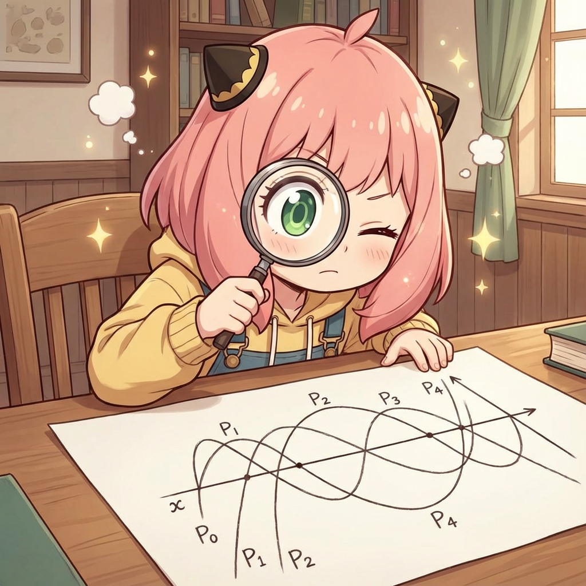
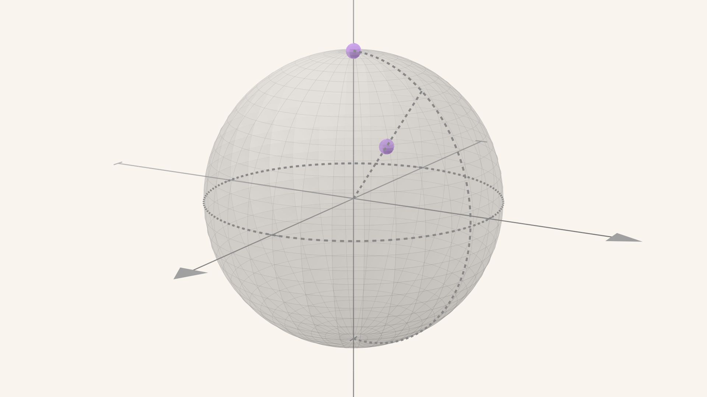
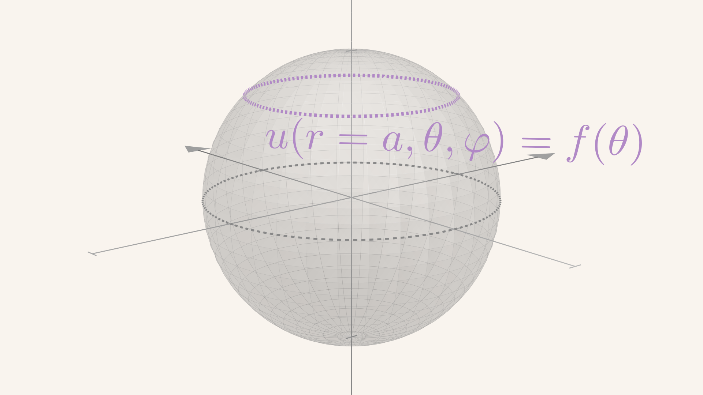
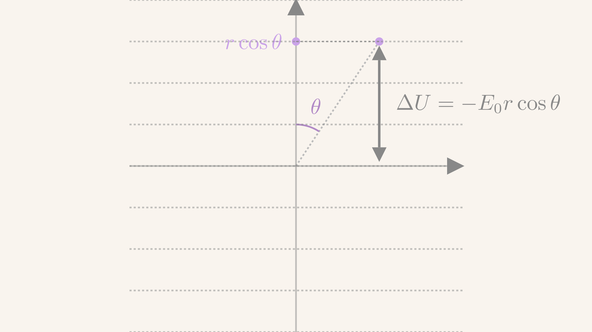
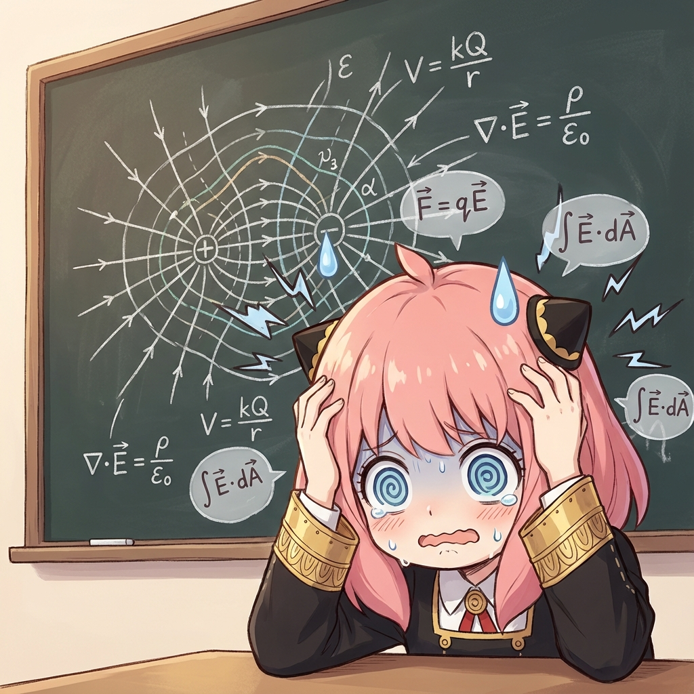
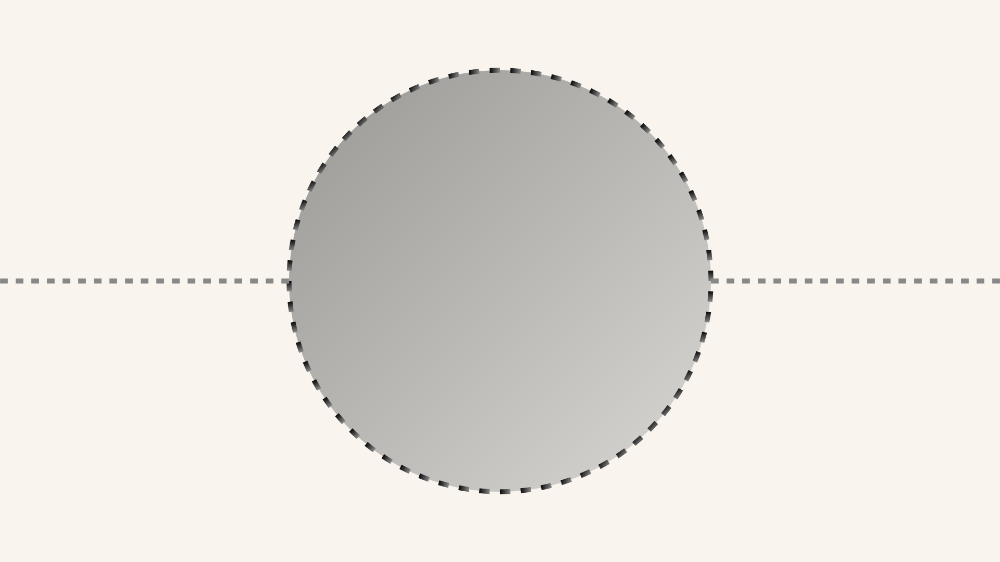
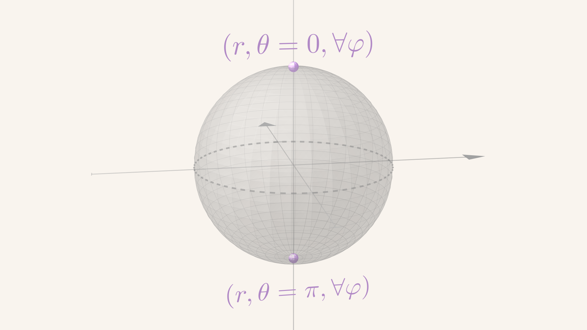

\gdef\red#1{{\color{cb8680}{#1}}} \gdef\green#1{{\color{4f8d63}{#1}}} \gdef\gray#1{{\color{gray}{#1}}} \gdef\purple#1{{\color{B189C6}{#1}}} \gdef\orange#1{{\color{dfa04b}{#1}}} \gdef\white#1{{\color{white}{#1}}}
u(r)=R(r)Y(θ,φ)=R(r)H(θ)Φ(φ)u(\mathbf{r}) = R(r) Y(\theta, \varphi) = R(r) H(\theta) \Phi(\varphi) u(r)=R(r)Y(θ,φ)=R(r)H(θ)Φ(φ)
Φ(φ+2π)=Φ(φ)⇒Φ(φ)=eimφ,m∈Z\Phi(\varphi + 2\pi) = \Phi(\varphi) \quad \Rightarrow\quad \Phi(\varphi) = e^{im \varphi}, m \in \mathbb{Z} Φ(φ+2π)=Φ(φ)⇒Φ(φ)=eimφ,m∈Z
r2R′′+2rR′−λR=0r^2 R'' + 2r R' - \lambda R = 0 r2R′′+2rR′−λR=0
H(θ)H(\theta)H(θ) 重命名为 P(x=cosθ)P(x = \cos \theta)P(x=cosθ)，满足
ddx[(1−x2)dPdx]+(λ−m21−x2)P=0\frac{d}{dx}\bigg[(1 - x^2)\frac{dP}{dx}\bigg] + \bigg(\lambda - \frac{m^2}{1 - x^2}\bigg)P = 0 dxd[(1−x2)dxdP]+(λ−1−x2m2)P=0
mmm 值来自 Φ(φ)\Phi(\varphi)Φ(φ) 的指数
x=±1x = \pm 1x=±1 对应 θ=0,π\theta = 0, \piθ=0,π，即南北极位置
Y(θ,φ)=H(θ)Φ(φ)Y(\theta, \varphi) = H(\theta) \Phi(\varphi)Y(θ,φ)=H(θ)Φ(φ) 应当形成球面上的单值函数
迫使 PPP 满足如下自然边界条件
{P(±1)=0m≠0P(±1)<∞m=0\left\{\begin{array}{cc} P(\pm 1) = 0 & m \ne 0\\ P(\pm 1) < \infty & m = 0 \end{array}\right. {P(±1)=0P(±1)<∞m=0m=0
轴对称问题：有一些特殊问题具有轴对称性，解与 φ\varphiφ 无关
要求 m=0m = 0m=0，勒让德方程 + 自然边界条件
ddx[(1−x2)dPdx]+λP=0,∣P(±1)∣<∞\frac{d}{dx}\bigg[(1 - x^2) \frac{dP}{dx}\bigg] + \lambda P = 0, \qquad |P(\pm 1)| < \infty dxd[(1−x2)dxdP]+λP=0,∣P(±1)∣<∞
拆解导数，除以 1−x21 - x^21−x2 得到二阶常微分方程标准形式
d2Pdx2−2x(1−x2)dPdx+λ(1−x2)P=0 \frac{d^2P}{dx^2} - \frac{2x}{(1-x^2)} \frac{dP}{dx} + \frac{\lambda}{(1-x^2)} P = 0 dx2d2P−(1−x2)2xdxdP+(1−x2)λP=0
以 原点 (常点) 为中心求级数解
两个线性独立解 y0(x),y1(x)y_0(x), y_1(x)y0(x),y1(x)：当 λ\lambdaλ 取 generic 值，两个解 不满足自然边界条件
对数发散
两个级数解的渐近形式为
y(x)∼y0∑m+∞12mx2m+y1∑m+∞12m+1x2m+1y(x) \sim y_0 \sum_{m}^{+\infty} \frac{1}{2m}x^{2m} + y_1 \sum_{m}^{+\infty} \frac{1}{2m+1}x^{2m+1} y(x)∼y0m∑+∞2m1x2m+y1m∑+∞2m+11x2m+1
两个级数在 x=±1x = \pm1x=±1 处都呈现 ln(1∓x)\ln(1\mp x)ln(1∓x) 的对数发散
自然边界条件 要求本征值
λ=2m(2m+1),(2m+1)(2m+2)\lambda = 2m (2m + 1), \qquad (2m + 1)(2m + 2) λ=2m(2m+1),(2m+1)(2m+2)
即 λ=ℓ(ℓ+1)\lambda = \ell(\ell + 1)λ=ℓ(ℓ+1)，ℓ=0,1,2,3,⋯\ell = 0, 1, 2, 3, \cdotsℓ=0,1,2,3,⋯
本征函数为 ℓ\ellℓ-阶 Legendre 函数 Pℓ(x)=Pℓ(cosθ)P_\ell(x) = P_\ell(\cos \theta)Pℓ(x)=Pℓ(cosθ)
Qℓ(x)Q_\ell(x)Qℓ(x) 仍是无穷级数，在 x=∓1x = \mp 1x=∓1 处有 对数发散 被排除
径向方向的方程
r2R′′(r)+2rR′(r)−ℓ(ℓ+1)R(r)=0⇒ R(r)=rℓ,or,1rℓ+1\begin{align*} & \ r^2 R''(r) + 2r R'(r) - \ell (\ell + 1) R(r) = 0 \\ \Rightarrow & \ R(r) = r^\ell, \quad \text{or}, \quad \frac{1}{r^{\ell + 1}} \end{align*} ⇒ r2R′′(r)+2rR′(r)−ℓ(ℓ+1)R(r)=0 R(r)=rℓ,or,rℓ+11
称为欧拉方程
u(r,θ,φ)=∑ℓ=0+∞(Aℓrℓ+Bℓrℓ+1)Pℓ(cosθ)u(r, \theta, \varphi) = \sum_{\ell = 0}^{+\infty} \bigg( A_\ell r^\ell + \frac{B_\ell}{r^{\ell + 1}} \bigg) P_\ell(\cos\theta) u(r,θ,φ)=ℓ=0∑+∞(Aℓrℓ+rℓ+1Bℓ)Pℓ(cosθ)
如果求解区域延伸到无穷远点 r=∞r = \inftyr=∞：rℓ>0r^{\ell > 0}rℓ>0 项发散，需要 排除 (所有 Aℓ>0=0A_{\ell > 0} = 0Aℓ>0=0)
只有 A0A_0A0 项在全空间有限
Liouville 定理：有界调和函数只能是常数
Legendre 多项式 Pℓ(x)P_\ell(x)Pℓ(x)，ℓ∈N\ell \in \mathbb{N}ℓ∈N 是一个 ℓ\ellℓ-次多项式
Pℓ(x)=∑k=0⌊ℓ/2⌋(−1)k(2ℓ−2k)!2ℓk!(ℓ−k)!(ℓ−2k)!xℓ−2kP_\ell(x) = \sum_{k = 0}^{\lfloor \ell/2 \rfloor} (-1)^k \frac{(2\ell - 2k)!}{2^\ell k!(\ell - k)! (\ell - 2k)!}x^{\ell - 2k} Pℓ(x)=k=0∑⌊ℓ/2⌋(−1)k2ℓk!(ℓ−k)!(ℓ−2k)!(2ℓ−2k)!xℓ−2k
最高最低幂次
k=0k = 0k=0 对应最高幂次 xℓx^\ellxℓ，k=⌊ℓ/2⌋k = \lfloor \ell/2 \rfloork=⌊ℓ/2⌋ 对应最低幂次 x0 or 1x^{0~ \text{or} ~ 1}x0 or 1
奇偶性
Pℓ(−x)=(−1)ℓPℓ(x)P_\ell(-x) = (-1)^\ell P_\ell(x) Pℓ(−x)=(−1)ℓPℓ(x)
因为 xℓx^\ellxℓ 因子，(−x)ℓ−2k=(−1)ℓ−2kxℓ−2k=(−1)ℓxℓ−2k(-x)^{\ell - 2k} = (-1)^{\ell - 2k} x^{\ell - 2k} = (-1)^\ell x^{\ell - 2k}(−x)ℓ−2k=(−1)ℓ−2kxℓ−2k=(−1)ℓxℓ−2k

Pℓ(x)P_\ell(x)Pℓ(x) 在 (−1,1)(-1, 1)(−1,1) 有 ℓ\ellℓ 个一阶零点
作为一个 nnn 次多项式，有 nnn 个零点是显然的。
此定理的关键是它们 没有 重根
且全部分布在 (−1,1)(-1, 1)(−1,1) 之间
Olinde Rodrigues
Rodrigues 定理：Legendre 多项式可以用如下微分表达式定义
Pℓ(x)=12ℓℓ!dℓdxℓ(x2−1)ℓP_\ell(x) = \frac{1}{2^\ell \ell!} \frac{d^\ell}{dx^\ell}(\orange{x^2 - 1})^\ell Pℓ(x)=2ℓℓ!1dxℓdℓ(x2−1)ℓ
~
证明微分表达式
(x2−1)ℓ=∑k=0ℓ(−1)kCℓkx2ℓ−2k(\orange{x^2 - 1})^\ell =\sum_{k = 0}^{\ell} (-1)^k C_\ell^k x^{2\ell - 2k} (x2−1)ℓ=k=0∑ℓ(−1)kCℓkx2ℓ−2k
dℓdxℓ(x2−1)ℓ=∑k=0ℓ(−1)kCℓkdℓdxℓx2ℓ−2k\purple{\frac{d^\ell}{dx^\ell}}(x^2 - 1)^\ell = \sum_{k = 0}^{\ell} (-1)^k C_\ell^k \purple{\frac{d^\ell}{dx^\ell}}x^{2\ell - 2k} dxℓdℓ(x2−1)ℓ=k=0∑ℓ(−1)kCℓkdxℓdℓx2ℓ−2k
dℓdxℓxn={n(n−1)...(n−ℓ+1)xn−ℓ=n!(n−ℓ)!xn−ℓ,ℓ≤n0,ℓ>n \frac{d^\ell}{dx^\ell} x^\red{n} = \left\{ \begin{array}{cc} n(n-1) ... (n - \ell + 1)x^{n-\ell} = \frac{\green{n}!}{(\purple{n - \ell})!} x^{\purple{n - \ell}}, & \ell \le n\\ 0, & \ell > n \end{array} \right. dxℓdℓxn={n(n−1)...(n−ℓ+1)xn−ℓ=(n−ℓ)!n!xn−ℓ,0,ℓ≤nℓ>n
dℓdxℓx2ℓ−2k={(2ℓ−2k)!(2ℓ−2k−ℓ)!x2ℓ−2k−ℓ,ℓ≤2ℓ−2k0,ℓ>2ℓ−2k\frac{d^\ell}{dx^\ell} x^{2\ell - 2k} = \left\{ \begin{array}{cc} \frac{(\green{2\ell - 2k})!}{(\purple{2\ell - 2k - \ell})!} x^{2\ell - 2k - \ell}, & \ell \le 2\ell - 2k\\ 0, & \ell > 2\ell - 2k \end{array}\right. dxℓdℓx2ℓ−2k={(2ℓ−2k−ℓ)!(2ℓ−2k)!x2ℓ−2k−ℓ,0,ℓ≤2ℓ−2kℓ>2ℓ−2k
dℓdxℓ(x2−1)=∑k=0ℓ(−1)kCℓkdℓdxℓx2ℓ−2k=∑k=0⌊ℓ/2⌋(−1)kCℓk(2ℓ−2k)!(2ℓ−2k−ℓ)!x2ℓ−2k−ℓ\frac{d^\ell}{dx^\ell}(x^2 - 1) = \sum_{k = 0}^{\ell} (-1)^k C_\ell^k \frac{d^\ell}{dx^\ell}x^{\green{2\ell - 2k}} = \sum_{k = 0}^{\red{\boldsymbol{\lfloor \ell/2 \rfloor}}} (-1)^k C_\ell^k \frac{(\green{2\ell - 2k})!}{(\purple{2\ell - 2k - \ell})!} x^{\purple{2\ell - 2k - \ell}} dxℓdℓ(x2−1)=k=0∑ℓ(−1)kCℓkdxℓdℓx2ℓ−2k=k=0∑⌊ℓ/2⌋(−1)kCℓk(2ℓ−2k−ℓ)!(2ℓ−2k)!x2ℓ−2k−ℓ
ℓ≤2ℓ−2k⇒k≤ℓ2⇒k=0,1,…,⌊ℓ/2⌋\ell \le 2\ell - 2k \quad \Rightarrow \quad k \le \frac{\ell}{2} \quad \Rightarrow \quad k = 0, 1, \dots, \red{\boldsymbol{\lfloor \ell/2 \rfloor}} ℓ≤2ℓ−2k⇒k≤2ℓ⇒k=0,1,…,⌊ℓ/2⌋
dℓdxℓ(x2−1)ℓ=∑k=0⌊ℓ/2⌋(−1)kℓ!k!(ℓ−k)!(2ℓ−2k)!(2ℓ−2k−ℓ)!x2ℓ−2k−ℓ\frac{d^\ell}{dx^\ell}(x^2 - 1)^\ell = \sum_{k = 0}^{\lfloor \ell/2 \rfloor} (-1)^k \orange{\frac{\ell!}{k! (\ell - k)!}} \frac{(2\ell - 2k)!}{(\green{2\ell - 2k - \ell})!}x^{2\ell - 2k - \ell} dxℓdℓ(x2−1)ℓ=k=0∑⌊ℓ/2⌋(−1)kk!(ℓ−k)!ℓ!(2ℓ−2k−ℓ)!(2ℓ−2k)!x2ℓ−2k−ℓ
12ℓℓ!dℓdxℓ(x2−1)ℓ=∑k=0⌊ℓ/2⌋(−1)k(2ℓ−2k)!2ℓk!(ℓ−k)!(ℓ−2k)!xℓ−2k=Pℓ(x)\red{\frac{1}{2^\ell \ell!}} \frac{d^\ell}{dx^\ell}(x^2 - 1)^\ell = \sum_{k = 0}^{\lfloor \ell/2 \rfloor} (-1)^k \frac{(2\ell - 2k)!}{\red{2^\ell} k! (\ell - k)! (\green{\ell - 2k})!}x^{\ell - 2k} = P_\ell(x) 2ℓℓ!1dxℓdℓ(x2−1)ℓ=k=0∑⌊ℓ/2⌋(−1)k2ℓk!(ℓ−k)!(ℓ−2k)!(2ℓ−2k)!xℓ−2k=Pℓ(x)
原点值 (结合奇偶性)
Pℓ odd(0)=0,Pℓ even(0)=(−1)ℓ/2ℓ!2ℓ[(ℓ/2)!]2P_{\ell ~ \text{odd}}(0) = 0, \qquad P_{\ell ~ \text{even}}(0) = (-1)^{\ell/2} \frac{\ell!}{2^\ell [(\ell/2)!]^2} Pℓ odd(0)=0,Pℓ even(0)=(−1)ℓ/22ℓ[(ℓ/2)!]2ℓ!
当 ℓ\ellℓ 是奇数，Pℓ(x)P_\ell(x)Pℓ(x) 是奇函数：原点值只能为零
当 ℓ\ellℓ 是偶数，Pℓ(0)P_\ell(0)Pℓ(0) 等于最低幂次项，即级数表达式中 k=ℓ/2k = \ell/2k=ℓ/2 项系数，
(−1)k(2ℓ−2k)!2ℓk!(ℓ−k)!(ℓ−2k)!=(−1)ℓ/2(2ℓ−ℓ)!2ℓ(ℓ/2)!(ℓ−ℓ/2)!0!=(−1)ℓ/2ℓ!2ℓ[ (ℓ/2)! ]2 \frac{(-1)^k (2\ell - 2k)!}{2^\ell \purple{k!} \orange{(\ell - k)!} \red{(\ell - 2k)!}}= \frac{(-1)^{\ell/2}(2\ell - \ell)!}{2^\ell \purple{(\ell/2)!}\orange{(\ell - \ell/2)!}\red{0!}} = (-1)^{\ell/2} \frac{\ell!}{2^\ell [ \ (\ell/2)! \ ]^2} 2ℓk!(ℓ−k)!(ℓ−2k)!(−1)k(2ℓ−2k)!=2ℓ(ℓ/2)!(ℓ−ℓ/2)!0!(−1)ℓ/2(2ℓ−ℓ)!=(−1)ℓ/22ℓ[ (ℓ/2)! ]2ℓ!
Pℓ even(0)=(−1)ℓ/2ℓ!2ℓ[(ℓ/2)!]2P_{\ell ~ \text{even}}(0) = (-1)^{\ell/2} \frac{\ell!}{2^\ell [(\ell/2)!]^2} Pℓ even(0)=(−1)ℓ/22ℓ[(ℓ/2)!]2ℓ!
⇒Pℓ=2n(0)=(−1)n(2n)!22n(n!)2\Rightarrow P_{\ell = 2n}(0) = (-1)^n \frac{(2n)!}{2^{2n} (n!)^2} ⇒Pℓ=2n(0)=(−1)n22n(n!)2(2n)!
定理：Pℓ(1)=1P_\ell(1) = 1Pℓ(1)=1，Pℓ(−1)=(−1)ℓP_{\ell}(-1) = (-1)^\ellPℓ(−1)=(−1)ℓ
求解 Pℓ(1)P_\ell(1)Pℓ(1)
根据微分表达式，
Pℓ(1)=12ℓℓ!dℓdxℓ∣x=1(x2−1)ℓP_\ell(1) = \frac{1}{2^\ell \ell!} \frac{d^\ell}{dx^\ell} \bigg|_{x = 1}(\orange{x^2 - 1})^\ell Pℓ(1)=2ℓℓ!1dxℓdℓx=1(x2−1)ℓ
dℓdxℓ[x2−1]ℓ=∑k=0ℓCℓk[dkdxk(x−1)ℓ][dℓ−kdxℓ−k(x+1)ℓ]\frac{d^\ell}{dx^\ell}[x^2 - 1]^\ell = \sum_{k = 0}^{\ell} C_{\ell}^k \left[{\frac{d^k}{dx^k}\purple{(x - 1)}^\ell}\right] \left[{\frac{d^{\ell - k}}{dx^{\ell - k}}\orange{(x + 1)}^\ell}\right] dxℓdℓ[x2−1]ℓ=k=0∑ℓCℓk[dxkdk(x−1)ℓ][dxℓ−kdℓ−k(x+1)ℓ]
Pℓ(1)=12ℓℓ!Cℓℓ×[dℓdxℓ(x−1)ℓ]×(x+1)ℓ∣x=1P_\ell(1) = \frac{1}{\red{2^\ell} \orange{\ell!}} C_\ell^\ell \times \orange{\left[{\frac{d^\ell}{dx^\ell}(x - 1)^\ell}\right]} \times \red{(x + 1)^\ell} \bigg|_{x = 1} Pℓ(1)=2ℓℓ!1Cℓℓ×[dxℓdℓ(x−1)ℓ]×(x+1)ℓx=1
Pℓ(1)=12ℓℓ!×ℓ!×(1+1)ℓ=1P_\ell(1) = \frac{1}{\red{2^\ell} \orange{\ell!}} \times \orange{\ell!} \times\red{(1 + 1)^\ell} = 1 Pℓ(1)=2ℓℓ!1×ℓ!×(1+1)ℓ=1
Legendre 方程是 Sturm-Liouville 问题的特例：本征函数带权正交
对于 Legendre 方程，权函数 ρ(x)=1\rho(x) = 1ρ(x)=1
内积 (f,g)(f,g)(f,g) 定义为
(f,g)≔∫−1+1f(x)g(x)dx\green{(f, g) \coloneqq \int_{-1}^{+1}f(x)g(x) dx} (f,g):=∫−1+1f(x)g(x)dx
(Pℓ,Pℓ′)=0,ℓ≠ℓ′(P_\ell, P_{\ell'}) = 0, \qquad \ell \ne \ell' (Pℓ,Pℓ′)=0,ℓ=ℓ′
证明正交性
∫xkdℓdxℓ[(x2−1)ℓ]dx(橙色部分是Pℓ 的主要成分)= xkdℓ−1dxℓ−1(x2−1)ℓ∣−11−k∫xk−1dℓ−1dxℓ−1(x2−1)ℓdx\begin{align*} & \ \int x^k \orange{\frac{d^\ell}{dx^\ell}\Big[{(x^2 - 1)^\ell}\Big]} dx \qquad \orange{(\text{橙色部分是} P_\ell ~ \text{的主要成分})}\\ = & \ \bcancel{x^k \frac{d^{\ell - 1}}{dx^{\ell - 1}}(x^2 - 1)^\ell\bigg|_{-1}^1 } \red{- k} \int x^{k - 1}\frac{d^{\ell - 1}}{dx^{\ell - 1}}(x^2 - 1)^\ell dx \end{align*} = ∫xkdxℓdℓ[(x2−1)ℓ]dx(橙色部分是Pℓ 的主要成分) xkdxℓ−1dℓ−1(x2−1)ℓ−11−k∫xk−1dxℓ−1dℓ−1(x2−1)ℓdx
∫−1+1xkPℓ(x)=(−1)kk!2ℓℓ!∫−11x0dℓ−kdℓ−k(x2−1)ℓdx=0\int_{-1}^{+1} x^k P_\ell(x) = \frac{(-1)^kk!}{\purple{2^\ell \ell!}} \int_{-1}^1 x^\red{0} \frac{d^{\ell \red{- k}}}{d^{\ell - k}}(x^2 - 1)^\ell dx = 0 ∫−1+1xkPℓ(x)=2ℓℓ!(−1)kk!∫−11x0dℓ−kdℓ−k(x2−1)ℓdx=0
∥Pℓ∥2=22ℓ+1,∥Pℓ∥=22ℓ+1\lVert P_\ell \rVert^2 = \frac{2}{2\ell + 1}, \qquad \lVert P_\ell \rVert = \sqrt{\frac{2}{2\ell + 1}} ∥Pℓ∥2=2ℓ+12,∥Pℓ∥=2ℓ+12
证明
∥Pℓ∥2= 12ℓℓ!∫−1+1Pℓ(x)dℓdxℓ(x2−1)ℓdx= 12ℓℓ!∫−1+1Pℓ(x)ddxd(ℓ−1)dx(ℓ−1)(x2−1)ℓdx\begin{align*} \lVert P_\ell \rVert^2 = & \ \frac{1}{2^\ell \ell!} \int_{-1}^{+1} P_\ell(x) \red{\frac{d^\ell}{dx^\ell}} \orange{(x^2 - 1)^\ell} dx\\ = & \ \frac{1}{2^\ell \ell!} \int_{-1}^{+1} P_\ell(x) \red{\frac{d}{dx} \frac{d^{(\ell - 1)}}{dx^{(\ell - 1)}}} \orange{(x^2 - 1)^\ell} dx \end{align*} ∥Pℓ∥2== 2ℓℓ!1∫−1+1Pℓ(x)dxℓdℓ(x2−1)ℓdx 2ℓℓ!1∫−1+1Pℓ(x)dxddx(ℓ−1)d(ℓ−1)(x2−1)ℓdx
∥Pℓ∥2=边界+12ℓℓ!∫−1+1Pℓ(1)(x)d(ℓ−1)dx(ℓ−1)(x2−1)ℓdx\lVert P_\ell \rVert^2 = \green{\text{边界}} + \frac{1}{2^\ell \ell!} \int_{-1}^{+1} P_\ell^{(1)}(x) \frac{d^{(\ell - 1)}}{dx^{(\ell - 1)}} (x^2 - 1)^\ell dx ∥Pℓ∥2=边界+2ℓℓ!1∫−1+1Pℓ(1)(x)dx(ℓ−1)d(ℓ−1)(x2−1)ℓdx
边界= Pℓ(x)[d(ℓ−1)dx(ℓ−1)(x2−1)ℓ]∣−1+1=0\green{边界 = } ~ P_\ell(x)\left[{\frac{d^{(\ell - 1)}}{dx^{(\ell - 1)}}(x^2 - 1)^\ell}\right] \Bigg|_{-1}^{+1} \red{= 0} 边界= Pℓ(x)[dx(ℓ−1)d(ℓ−1)(x2−1)ℓ]−1+1=0
得到
∥Pℓ∥2=12ℓℓ!∫−1+1Pℓ(1)(x)d(ℓ−1)dx(ℓ−1)(x2−1)ℓdx\lVert P_\ell \rVert^2 = \frac{1}{2^\ell \ell!} \int_{-1}^{+1} P_\ell^{(1)}(x) \frac{d^{(\ell - 1)}}{dx^{(\ell - 1)}} (x^2 - 1)^\ell dx ∥Pℓ∥2=2ℓℓ!1∫−1+1Pℓ(1)(x)dx(ℓ−1)d(ℓ−1)(x2−1)ℓdx
把 ℓ\ellℓ-阶导数 降阶 一次，转移到了 Pℓ(x)P_\ell(x)Pℓ(x) 身上
不断重复上述分部积分操作，把 ℓ\ellℓ-阶求导全部转移到 PℓP_\ellPℓ 身上
∥Pℓ∥2=12ℓℓ!∫−1+1Pℓ(ℓ)(x)(1−x2)ℓdx \lVert P_\ell \rVert^2 = \frac{1}{2^\ell \ell!} \int_{-1}^{+1} \purple{P_\ell^{(\ell)}(x)} (1 - x^2)^\ell dx ∥Pℓ∥2=2ℓℓ!1∫−1+1Pℓ(ℓ)(x)(1−x2)ℓdx
Pℓ(ℓ)(x)=dℓdxℓPℓ(x)=12ℓℓ!dℓdxℓdℓdxℓ(x2−1)ℓ=12ℓℓ!d2ℓdx2ℓx2ℓ=(2ℓ)!2ℓℓ!\purple{P_\ell^{(\ell)}(x)} = \frac{d^\ell}{dx^\ell}P_\ell(x) = \frac{1}{2^\ell \ell!} \frac{d^\ell}{dx^\ell} \frac{d^\ell}{dx^\ell}(x^2 - 1)^\ell = \frac{1}{\purple{2^\ell \ell!}} \orange{\frac{d^{2\ell}}{dx^{2\ell}}x^{2\ell}} = \frac{\orange{(2\ell)!}}{\purple{2^\ell \ell!}} Pℓ(ℓ)(x)=dxℓdℓPℓ(x)=2ℓℓ!1dxℓdℓdxℓdℓ(x2−1)ℓ=2ℓℓ!1dx2ℓd2ℓx2ℓ=2ℓℓ!(2ℓ)!
∫−1+1(1−x2)ℓdx=22ℓ+1(ℓ!)2(2ℓ+1)!\int_{-1}^{+1} (1 - x^2)^\ell dx = \frac{2^{2\ell + 1}(\ell!)^2}{(2\ell + 1)!} ∫−1+1(1−x2)ℓdx=(2ℓ+1)!22ℓ+1(ℓ!)2
∥Pℓ∥2=12ℓℓ!⏟原生×(2ℓ)!2ℓℓ!⏟Pℓ(ℓ)(x)×22ℓ+1(ℓ!)2(2ℓ+1)!=22ℓ+1\lVert P_\ell \rVert^2 = \underbrace{\frac{1}{\orange{2^\ell} \red{\ell!}}}_\text{原生} \times \underbrace{\frac{(2\ell)!}{\orange{2^\ell} \red{\ell!}}}_{P_\ell^{(\ell)}(x)} \times \frac{2^{\orange{2\ell} + 1}\red{(\ell!)^2}}{(2\ell + 1)!}= \frac{2}{2\ell + 1} ∥Pℓ∥2=原生2ℓℓ!1×Pℓ(ℓ)(x)2ℓℓ!(2ℓ)!×(2ℓ+1)!22ℓ+1(ℓ!)2=2ℓ+12
统一内积表达式
(Pℓ,Pℓ′)=22ℓ+1δℓ,ℓ′(P_\ell, P_{\ell'}) = \frac{2}{2\ell + 1}\delta_{\ell, \ell'} (Pℓ,Pℓ′)=2ℓ+12δℓ,ℓ′
f(x)=∑ℓ=0+∞fℓPℓ(x)f(x) = \sum_{\ell = 0}^{+\infty} f_\ell P_\ell(x) f(x)=ℓ=0∑+∞fℓPℓ(x)
fℓ=2ℓ+12∫−1+1f(x)Pℓ(x)dxf_\ell = \frac{2\ell + 1}{2} \int_{-1}^{+1}f(x)P_\ell(x)dx fℓ=22ℓ+1∫−1+1f(x)Pℓ(x)dx
展开系数
f(x)=∑ℓ′=0+∞fℓ′Pℓ′(x)f(x) = \sum_{{\ell'} = 0}^{+\infty} f_{\ell'} P_{\ell'}(x) f(x)=ℓ′=0∑+∞fℓ′Pℓ′(x)
∫−1+1f(x)Pℓ(x)dx=∫−1+1∑ℓ′=0+∞fℓ′Pℓ′(x)Pℓ(x)dx\int_{-1}^{+1} f(x)P_\ell(x)dx = \int_{-1}^{+1} \sum_{{\ell'} = 0}^{+\infty} f_{\ell'} P_{\ell'}(x)P_\ell(x)dx ∫−1+1f(x)Pℓ(x)dx=∫−1+1ℓ′=0∑+∞fℓ′Pℓ′(x)Pℓ(x)dx
∫−1+1f(x)Pℓ(x)dx= ∑ℓ′=0+∞fℓ′∫−1+1Pℓ′(x)Pℓ(x)dx= ∑ℓ′=0+∞fℓ′22ℓ′+1δℓ,ℓ′=22ℓ+1fℓ\begin{align*} \int_{-1}^{+1} f(x)P_\ell(x)dx = & \ \sum_{{\ell'} = 0}^{+\infty} f_{\ell'} \orange{\int_{-1}^{+1} P_{\ell'}(x)P_\ell(x)dx} \\ = & \ \sum_{{\ell'} = 0}^{+\infty} f_{\ell'} \orange{\frac{2}{2\ell' + 1}\delta_{\ell, \ell'}} = \frac{2}{2\ell + 1} f_\ell \end{align*} ∫−1+1f(x)Pℓ(x)dx== ℓ′=0∑+∞fℓ′∫−1+1Pℓ′(x)Pℓ(x)dx ℓ′=0∑+∞fℓ′2ℓ′+12δℓ,ℓ′=2ℓ+12fℓ
x0=P0(x),x1=P1(x)x^0 = P_0(x), \qquad x^1 = P_1(x) x0=P0(x),x1=P1(x)
x2=23P2(x)+13P0(x)x^2 = \frac{2}{3}P_2(x) + \frac{1}{3}P_0(x) x2=32P2(x)+31P0(x)
x3=25P3(x)+35P1(x)x^3 = \frac{2}{5}P_3(x) + \frac{3}{5}P_1(x) x3=52P3(x)+53P1(x)
x4=835P3(x)+47P2(x)+15P0(x)x^4 = \frac{8}{35}P_3(x) + \frac{4}{7} P_2(x) + \frac{1}{5}P_0(x) x4=358P3(x)+74P2(x)+51P0(x)
无穷多个 PℓP_\ellPℓ，打包成一个方便携带、书写的对象
U(r,x)≔∑ℓ=0+∞rℓPℓ(x),r<1U(r, x) \coloneqq \sum_{\ell = 0}^{+\infty} r^\ell P_\ell(x), \quad r < 1 U(r,x):=ℓ=0∑+∞rℓPℓ(x),r<1
约定：上述形态的函数成为 Pℓ(x)P_\ell(x)Pℓ(x) 的 生成函数 (generating function)、母函数
U(r,x)U(r, x)U(r,x) 是 rrr 的 幂级数
1ℓ!dℓU(r,x)drℓ∣r=0=Pℓ(x),∮0dz2πizz−ℓU(z,x)=Pℓ(x)\frac{1}{\ell!}\frac{d^\ell U(r, x)}{dr^\ell} \bigg|_{r = 0} = P_\ell(x), \qquad \oint_0 \frac{dz}{2\pi i \red{z}} z^{-\ell} U(z, x) = P_\ell(x) ℓ!1drℓdℓU(r,x)r=0=Pℓ(x),∮02πizdzz−ℓU(z,x)=Pℓ(x)
f(z)≔∑nanzn f(z) \coloneqq \sum_{n}a_n z^n f(z):=n∑anzn
an=∮dz2πizz−nf(z) a_n = \oint \frac{dz}{2\pi i z} z^{-n} f(z) an=∮2πizdzz−nf(z)
生成函数 U(r,x)U(r, x)U(r,x) 到底等于什么？
如果不能知道 U(r,x)U(r,x)U(r,x) 的“简化表达式”，那么它就没什么用处了
策略
U(r,x)U(r,x)U(r,x) 是 Laplace 方程的解 →\to→ U(r,x)U(r, x)U(r,x) 是某种静电势分布
→\to→ 找到对应的静电系统 →\to→ 得到简化的静电势表达式
对比球体内部 (r<1r < 1r<1) Laplace 方程的 轴对称一般解
U(r,x)≔∑ℓ=0+∞rℓPℓ(x)↔u(r,x=cosθ)=∑ℓ=0+∞AℓrℓPℓ(x) U(r, x) \coloneqq \sum_{\ell = 0}^{+\infty} r^\ell P_\ell(x) \leftrightarrow \green{u(r, x = \cos \theta)} = \sum_{\ell = 0}^{+\infty} A_\ell r^\ell P_\ell(x) U(r,x):=ℓ=0∑+∞rℓPℓ(x)↔u(r,x=cosθ)=ℓ=0∑+∞AℓrℓPℓ(x)
球体内部解要求球心处解满足自然边界条件，因此 Bℓ=0B_\ell = 0Bℓ=0
U(r,x)U(r, x)U(r,x) 对应 Aℓ=1A_\ell = 1Aℓ=1
考虑 (0,0,1)(0,0,1)(0,0,1) 处单位点电荷在单位球体 (x,y,z)(x, y, z)(x,y,z) 处形成的静电势 (轴对称)
u0(r,x=cosθ)=11−2rcosθ+r2u_0(r, x = \cos\theta) = \frac{1}{\sqrt{1 - 2r \cos \theta + r^2}} u0(r,x=cosθ)=1−2rcosθ+r21
x2+y2+(z−1)2=r2sin2θ+(rcosθ−1)2=r2−2rcosθ+1\sqrt{x^2 + y^2 + (z - 1)^2} = \sqrt{r^2 \sin^2 \theta + (r \cos \theta - 1)^2} = \sqrt{r^2 - 2r \cos \theta + 1} x2+y2+(z−1)2=r2sin2θ+(rcosθ−1)2=r2−2rcosθ+1

单位点电荷在北极
作为 Laplace 方程解，该电势分布必然可以写成广义傅里叶级数，
u0(r,x)=∑ℓ=0+∞AℓrℓPℓ(x)u_0(r, x) = \sum_{\ell = 0}^{+\infty} \red{A_\ell} r^\ell P_\ell(x) u0(r,x)=ℓ=0∑+∞AℓrℓPℓ(x)
系数 Aℓ=?A_\ell =?Aℓ=?
可以硬算，也可以投机取巧：检查特殊值
u0(r,x=1)=11−2rx+r2=11−r=∑ℓ=0+∞rℓ×1=∑ℓ=0+∞rℓPℓ(x=1)u_0(r, \purple{x = 1}) = \frac{1}{\orange{\sqrt{1 - 2rx + r^2}}} = \frac{1}{\orange{1 - r}} = \sum_{\ell = 0}^{+\infty} r^\ell \purple{\times 1} = \sum_{\ell = 0}^{+\infty} r^\ell P_\ell(\purple{x = 1}) u0(r,x=1)=1−2rx+r21=1−r1=ℓ=0∑+∞rℓ×1=ℓ=0∑+∞rℓPℓ(x=1)
与轴对称 Laplace 方程在球坐标系下球体内的一般解比较
u0(r,x=1)= u(r,x=1)∑ℓ=0+∞rℓPℓ(x=1)= ∑ℓ=0+∞AℓrℓPℓ(x=1)\begin{align*} u_0(r, x = 1) = & \ u(r, x = 1)\\ \sum_{\ell = 0}^{+\infty} r^\ell P_\ell(x = 1) = & \ \sum_{\ell = 0}^{+\infty} \red{A_\ell} r^\ell P_\ell(x = 1) \end{align*} u0(r,x=1)=ℓ=0∑+∞rℓPℓ(x=1)= u(r,x=1) ℓ=0∑+∞AℓrℓPℓ(x=1)
⇒Aℓ=1\Rightarrow \quad \red{A_\ell} = 1 ⇒Aℓ=1
u0(r,x)=11−2rx+r2=∑ℓ=0+∞rℓPℓ(x)⏟u(r,x)∣Aℓ=1=U(r,x)u_0(r, x) = \frac{1}{\sqrt{1 - 2rx + r^2}} = \underbrace{\sum_{\ell = 0}^{+\infty} r^\ell P_\ell(x)}_{u(r,x)|_{A_\ell = 1}} = U(r, x) u0(r,x)=1−2rx+r21=u(r,x)∣Aℓ=1ℓ=0∑+∞rℓPℓ(x)=U(r,x)
当 r>1r > 1r>1，生成泛函也可以展开
11−2rx+r2=∑ℓ=0+∞1rℓ+1Pℓ(x)\frac{1}{\sqrt{1 - 2r x + r^2}} = \sum_{\ell = 0}^{+\infty} \frac{1}{r^{\ell + 1}} P_\ell(x) 1−2rx+r21=ℓ=0∑+∞rℓ+11Pℓ(x)
做个变量替换即可，r~=1/r\tilde r = 1/rr~=1/r
11−2rx+r2=r~1−2r~x+r~2\frac{1}{\sqrt{1 - 2r x + r^2}} = \frac{\tilde r}{\sqrt{1 - 2\tilde r x + \tilde r^2}} 1−2rx+r21=1−2r~x+r~2r~
r~1−2r~x+r~2=r~∑ℓ=0+∞r~ℓPℓ(x)=∑ℓ=0+∞1rℓ+1Pℓ(x)\frac{\red{\tilde r}}{\sqrt{1 - 2\tilde r x + \tilde r^2}} = \red{\tilde r}\sum_{\ell = 0}^{+\infty} \tilde r^{\ell} P_\ell(x) = \sum_{\ell = 0}^{+\infty} \frac{1}{r^{\ell + 1}} P_\ell(x) 1−2r~x+r~2r~=r~ℓ=0∑+∞r~ℓPℓ(x)=ℓ=0∑+∞rℓ+11Pℓ(x)
取 r=±1\orange{r = \pm1}r=±1，1−2rx+r2=2∓2x=2(1∓x)1 - 2r x + r^2 = 2 \mp 2x = 2(1 \mp x)1−2rx+r2=2∓2x=2(1∓x)
12(1−x)=∑ℓ=0+∞Pℓ(x),12(1+x)=∑ℓ=0+∞(−1)ℓPℓ(x)\frac{1}{\sqrt{2(1 - x)}} = \sum_{\ell = 0}^{+\infty} P_\ell(x) , \quad \frac{1}{\sqrt{2(1 + x)}} = \sum_{\ell = 0}^{+\infty} (-1)^\ell P_\ell(x) 2(1−x)1=ℓ=0∑+∞Pℓ(x),2(1+x)1=ℓ=0∑+∞(−1)ℓPℓ(x)
这是所有 PℓP_\ellPℓ 共同满足的关系
利用母函数，可以导出 Legendre 多项式的递推关系 (recurrence relation)
若干 (不是全部) PℓP_\ellPℓ 及其导数之间的关系
第一递推关系：来自对 rrr 求导
第二递推关系：来自对 xxx 求导
第三递推关系：来自对 r,xr, xr,x 混合求导
ddrU(r,x)=x−r(1−2rx+r2)32=(x−r)(1−2rx+r2)U(r,x)\frac{d}{dr}U(r,x) = \frac{x - r}{(1 - 2rx + r^2)^{\frac{3}{2}}} = \frac{(x - r)}{(1 - 2rx + r^2)}U(r,x) drdU(r,x)=(1−2rx+r2)23x−r=(1−2rx+r2)(x−r)U(r,x)
(1−2rx+r2)ddrU(r,x)=(x−r)U(r,x)(1 - 2rx + r^2) \orange{\frac{d}{dr}U(r,x)} = (x - r) \purple{U(r,x)} (1−2rx+r2)drdU(r,x)=(x−r)U(r,x)
(1−2rx+r2)∑ℓ=0+∞ℓrℓ−1Pℓ(x)=(x−r)∑ℓ=0+∞rℓPℓ(x)(1 - 2rx + r^2) \orange{\sum_{\ell = 0}^{+\infty}\ell r^{\ell - 1} P_{\ell}(x)} = (x - r) \purple{\sum_{\ell = 0}^{+\infty} r^\ell P_\ell(x)} (1−2rx+r2)ℓ=0∑+∞ℓrℓ−1Pℓ(x)=(x−r)ℓ=0∑+∞rℓPℓ(x)
(1−2rx+r2)∑ℓ=0+∞ℓrℓ−1Pℓ(x)= ∑ℓ=0+∞ℓrℓ−1Pℓ(x)−2x∑ℓ=0+∞ℓrℓPℓ(x)+∑ℓ=0+∞ℓrℓ+1Pℓ(x)= ∑ℓ=−1+∞(ℓ+1)rℓPℓ+1(x)−2x∑ℓ=0+∞ℓrℓPℓ(x)+∑ℓ=1+∞(ℓ−1)rℓPℓ−1(x)\begin{align*} & \ (1 - 2rx + r^2)\sum_{\ell = 0}^{+\infty}\ell r^{\ell - 1} P_\ell(x)\\ = & \ \sum_{\ell = 0}^{+\infty} \ell r^{\ell - 1} P_\ell(x) - 2x \sum_{\ell = 0}^{+\infty} \ell r^{\ell} P_\ell(x) + \sum_{\ell = 0}^{+\infty} \ell r^{\ell + 1} P_\ell(x) \\ = & \ \sum_{\ell = -1}^{+\infty} (\ell + 1) r^\ell P_{\ell + 1}(x) - 2x \sum_{\ell = 0}^{+\infty} \ell r^{\ell} P_{\ell}(x) + \sum_{\ell = 1}^{+\infty} (\ell - 1) r^{\ell} P_{\ell - 1}(x) \end{align*} == (1−2rx+r2)ℓ=0∑+∞ℓrℓ−1Pℓ(x) ℓ=0∑+∞ℓrℓ−1Pℓ(x)−2xℓ=0∑+∞ℓrℓPℓ(x)+ℓ=0∑+∞ℓrℓ+1Pℓ(x) ℓ=−1∑+∞(ℓ+1)rℓPℓ+1(x)−2xℓ=0∑+∞ℓrℓPℓ(x)+ℓ=1∑+∞(ℓ−1)rℓPℓ−1(x)
(x−r)∑ℓ=0+∞rℓPℓ(x)= x∑ℓ=0+∞rℓPℓ(x)−∑ℓ=0+∞rℓ+1Pℓ(x)=∑ℓ=0+∞rℓxPℓ(x)−∑ℓ=1+∞rℓPℓ−1(x)\begin{align*} & \ (x - r) \sum_{\ell = 0}^{+\infty} r^\ell P_\ell(x)\\ = & \ x \sum_{\ell = 0}^{+\infty} r^\ell P_\ell(x) - \sum_{\ell = 0}^{+\infty} r^{\ell + 1} P_\ell(x) = \sum_{\ell = 0}^{+\infty} r^\ell \purple{x P_\ell(x)} - \sum_{\red{\boldsymbol{\ell = 1}}}^{+\infty} r^{\ell} \orange{P_{\ell - 1}(x)} \end{align*} = (x−r)ℓ=0∑+∞rℓPℓ(x) xℓ=0∑+∞rℓPℓ(x)−ℓ=0∑+∞rℓ+1Pℓ(x)=ℓ=0∑+∞rℓxPℓ(x)−ℓ=1∑+∞rℓPℓ−1(x)
对比 rℓr^\ellrℓ 的系数，得到 第一递推关系
(ℓ+1)Pℓ+1(x)−2xℓPℓ(x)+(ℓ−1)Pℓ−1(x)= xPℓ(x)−Pℓ−1(x)⇒(2ℓ+1) xPℓ(x)= (ℓ+1)Pℓ+1(x)+ℓPℓ−1(x)\begin{align*} (\ell + 1)P_{\ell + 1}(x) - 2x \ell P_\ell(x) + (\ell - 1) P_{\ell - 1}(x) = & \ \purple{x P_\ell(x)} - \orange{P_{\ell - 1}(x)} \\ \Rightarrow \qquad\qquad (2\ell + 1) \ x P_\ell(x) = & \ (\ell + 1)P_{\ell + 1}(x) + \ell P_{\ell - 1}(x) \end{align*} (ℓ+1)Pℓ+1(x)−2xℓPℓ(x)+(ℓ−1)Pℓ−1(x)=⇒(2ℓ+1) xPℓ(x)= xPℓ(x)−Pℓ−1(x) (ℓ+1)Pℓ+1(x)+ℓPℓ−1(x)
可以约定 P−1(x)=0P_{-1}(x) = 0P−1(x)=0
(1−2rx+r2)ddxU(r,x)=rU(r,x)(1 - 2rx + r^2) \frac{d}{dx}U(r,x) = r U(r,x) (1−2rx+r2)dxdU(r,x)=rU(r,x)
(1−2rx+r2)∑ℓ=0+∞rℓPℓ′(x)=r∑ℓ=0+∞rℓPℓ(x)(1 - 2rx + r^2)\sum_{\ell = 0}^{+\infty} r^\ell P'_\ell(x) = r \sum_{\ell = 0}^{+\infty} r^\ell P_\ell(x) (1−2rx+r2)ℓ=0∑+∞rℓPℓ′(x)=rℓ=0∑+∞rℓPℓ(x)
(1−2rx+r2)∑ℓ=0+∞rℓPℓ′(x)= r∑ℓ=0+∞rℓPℓ(x)∑ℓ=0+∞rℓ+1[Pℓ+1′(x)−2xPℓ′(x)+Pℓ−1′(x)]= ∑ℓ=0+∞rℓ+1Pℓ(x)\begin{align*} (1 - 2rx + r^2)\sum_{\ell = 0}^{+\infty} r^\ell P'_\ell(x) = & \ r \sum_{\ell = 0}^{+\infty} r^\ell P_\ell(x)\\ \sum_{\ell = 0}^{+\infty}\purple{r^{\ell + 1}}[ P'_{\ell + 1}(x) - 2xP'_\ell(x) + P'_{\ell - 1}(x)] = & \ \sum_{\ell = 0}^{+\infty} \purple{r^{\ell + 1}} P_\ell(x) \end{align*} (1−2rx+r2)ℓ=0∑+∞rℓPℓ′(x)=ℓ=0∑+∞rℓ+1[Pℓ+1′(x)−2xPℓ′(x)+Pℓ−1′(x)]= rℓ=0∑+∞rℓPℓ(x) ℓ=0∑+∞rℓ+1Pℓ(x)
Pℓ+1′(x)−2xPℓ′(x)+Pℓ−1′(x)=Pℓ(x)P'_{\ell + 1}(x) - 2x P'_\ell(x) + P'_{\ell - 1}(x) = P_\ell(x) Pℓ+1′(x)−2xPℓ′(x)+Pℓ−1′(x)=Pℓ(x)
(2ℓ+1) xPℓ(x)=(ℓ+1)Pℓ+1(x)+ℓPℓ−1(x)(ddx)⇒ (2ℓ+1)Pℓ(x)+(2ℓ+1)xPℓ′(x)=(ℓ+1)Pℓ+1′(x)+ℓPℓ−1′(x)(×2)⇒ 2(2ℓ+1)Pℓ(x)=2(ℓ+1)Pℓ+1′(x)+2ℓPℓ−1′(x)−2(2ℓ+1)xPℓ′(x)\begin{align*} & \ (2\ell + 1) \ x P_\ell(x) = (\ell + 1)P_{\ell + 1}(x) + \ell P_{\ell - 1}(x)\\ \\ \gray{(\frac{d}{dx})}\Rightarrow & \ (2\ell + 1) P_\ell(x) + (2\ell + 1) x P'_\ell(x) = (\ell + 1)P'_{\ell + 1}(x) + \ell P'_{\ell - 1}(x)\\ \\ \gray{(\times 2)}\Rightarrow & \ 2(2\ell + 1) P_\ell(x) = 2(\ell + 1)P'_{\ell + 1}(x) + 2\ell P'_{\ell - 1}(x) - \red{2(2\ell + 1) x P'_\ell(x)} \end{align*} (dxd)⇒(×2)⇒ (2ℓ+1) xPℓ(x)=(ℓ+1)Pℓ+1(x)+ℓPℓ−1(x) (2ℓ+1)Pℓ(x)+(2ℓ+1)xPℓ′(x)=(ℓ+1)Pℓ+1′(x)+ℓPℓ−1′(x) 2(2ℓ+1)Pℓ(x)=2(ℓ+1)Pℓ+1′(x)+2ℓPℓ−1′(x)−2(2ℓ+1)xPℓ′(x)
(2ℓ+1)Pℓ(x)=(2ℓ+1)Pℓ+1′(x)−2(2ℓ+1)xPℓ′(x)+(2ℓ+1)Pℓ−1′(x)(2\ell + 1)P_\ell(x) = (2\ell + 1)P'_{\ell + 1}(x) - \red{2(2\ell + 1)x P'_\ell(x) }+ (2\ell + 1)P'_{\ell - 1}(x) (2ℓ+1)Pℓ(x)=(2ℓ+1)Pℓ+1′(x)−2(2ℓ+1)xPℓ′(x)+(2ℓ+1)Pℓ−1′(x)
(2ℓ+1)Pℓ(x)=[2(ℓ+1)−(2ℓ+1)]Pℓ+1′(x)+[2ℓ−(2ℓ+1)]Pℓ−1′(x)(2\ell + 1) P_\ell(x) = [2(\ell + 1) - (2\ell + 1)]P'_{\ell + 1}(x) + [2\ell - (2\ell + 1)]P'_{\ell - 1}(x) (2ℓ+1)Pℓ(x)=[2(ℓ+1)−(2ℓ+1)]Pℓ+1′(x)+[2ℓ−(2ℓ+1)]Pℓ−1′(x)
(2ℓ+1)Pℓ(x)=Pℓ+1′(x)−Pℓ−1′(x)(2\ell + 1)P_\ell(x) = P'_{\ell + 1}(x) - P'_{\ell - 1}(x) (2ℓ+1)Pℓ(x)=Pℓ+1′(x)−Pℓ−1′(x)
第一递推关系：对 rrr 求导
第二递推关系：对 xxx 求导
第三递推关系：对 r,xr, xr,x 混合求导，结合第一递推
E=−∇u\mathbf{E} = - \nabla u E=−∇u
∮∂VE⋅dS= Qϵ0(高斯定理)⇒∫V∇⋅EdV= ∫Vρϵ0dV\begin{align*} \oint_{\partial V} \mathbf{E} \cdot d\mathbf{S} = & \ \frac{\orange{Q}}{\epsilon_0}\\ \gray{(高斯定理)}\Rightarrow \int_V \nabla \cdot \mathbf{E} dV = & \ \orange{\int_V} \frac{\orange{\rho}}{\epsilon_0} \orange{dV} \end{align*} ∮∂VE⋅dS=(高斯定理)⇒∫V∇⋅EdV= ϵ0Q ∫Vϵ0ρdV
∇⋅E=ρϵ0\nabla \cdot \mathbf{E} = \frac{\rho}{\epsilon_0} ∇⋅E=ϵ0ρ
∇2u=∇⋅∇u=−∇⋅E=−ρϵ0\purple{\nabla^2 u} = \nabla \cdot \nabla u = - \nabla \cdot \mathbf{E} = \purple{- \frac{\rho}{\epsilon_0}} ∇2u=∇⋅∇u=−∇⋅E=−ϵ0ρ
∇2u=0\nabla^2 u = 0 ∇2u=0

问题：考虑半径 aaa 的薄球壳，球体内外均没有电荷分布，球体表面 r=ar = ar=a 上的电势已知 (与 φ\varphiφ 无关)
u(a,θ,φ)=f(θ),u(r→+∞,θ,φ)=0u(a, \theta, \varphi) = f(\theta), \qquad u(r\to +\infty, \theta, \varphi) = 0 u(a,θ,φ)=f(θ),u(r→+∞,θ,φ)=0
求「体内与球外」电势分布
即原点与无穷远点均属于求解区域
球内，球外没有电荷分布：球内球外 Laplace 方程
能否直接说明 uuu 是常数？ 球面 r=ar = ar=a 有电荷分布，破坏 Laplace 方程
u(r,θ,φ)=∑ℓ=0+∞(Aℓrℓ+Bℓrℓ+1)Pℓ(cosθ)u(r, \theta, \varphi) = \sum_{\ell = 0}^{+\infty} (A_\ell r^\ell + \frac{B_\ell}{r^{\ell + 1}}) P_\ell(\cos \theta) u(r,θ,φ)=ℓ=0∑+∞(Aℓrℓ+rℓ+1Bℓ)Pℓ(cosθ)
调整 Aℓ,BℓA_\ell, B_\ellAℓ,Bℓ，重新归一化，
u(r,θ,φ)=∑ℓ=0+∞(Aℓ(ra)ℓ+Bℓ(ar)ℓ+1)Pℓ(cosθ)u(r, \theta, \varphi) = \sum_{\ell = 0}^{+\infty} \left({A_\ell \left({\frac{r}{a}}\right)^\ell + B_\ell \left({\frac{a}{r}}\right)^{\ell + 1}}\right) P_\ell(\cos \theta) u(r,θ,φ)=ℓ=0∑+∞(Aℓ(ar)ℓ+Bℓ(ra)ℓ+1)Pℓ(cosθ)
球内、球外上式都适用
球内外的 A,BA, BA,B 系数独立求解，但应在 r=ar = ar=a 处使得解连续，都等于 f(θ)f(\theta)f(θ)
u(a,θ)=∑ℓ=0+∞AℓaℓaℓPℓ(cosθ)=∑ℓ=0+∞AℓPℓ(cosθ)=f(θ)≔g(x=cosθ)u(a, \theta) = \sum_{\ell = 0}^{+\infty} A_\ell \frac{a^\ell}{a^\ell} P_\ell(\cos\theta) = \sum_{\ell = 0}^{+\infty} A_\ell P_\ell(\cos \theta) = \green{f(\theta) \coloneqq g(x = \cos \theta)} u(a,θ)=ℓ=0∑+∞AℓaℓaℓPℓ(cosθ)=ℓ=0∑+∞AℓPℓ(cosθ)=f(θ):=g(x=cosθ)
Aℓ=2ℓ+12∫−1+1g(x)Pℓ(x)dx=2ℓ+12∫0πf(θ)Pℓ(cosθ)sinθdθA_\ell = \frac{2\ell + 1}{2} \int_{-1}^{+1} g(x) P_\ell(x) dx = \frac{2\ell + 1}{2} \int_{0}^{\pi} f(\theta) P_\ell(\cos \theta) \sin \theta d\theta Aℓ=22ℓ+1∫−1+1g(x)Pℓ(x)dx=22ℓ+1∫0πf(θ)Pℓ(cosθ)sinθdθ
注意 积分上下限，θ=0,π→cosθ=1,−1\theta = 0, \pi \rightarrow \cos \theta = 1, -1θ=0,π→cosθ=1,−1, dcosθ=−sinθdθd\cos \theta = \red{\boldsymbol{-}}\sin \theta d\thetadcosθ=−sinθdθ，
∫−1+1g(x)Pℓ(x)dx=∫π0f(θ)Pℓ(cosθ)dcosθ= ∫π0f(θ)Pℓ(cosθ)(−sinθ)dθ=∫0πf(θ)Pℓ(cosθ)sinθdθ\begin{align*} & \ \int_{-1}^{+1} g(x) P_\ell(x) dx = \int_{\pi}^{0} f(\theta) P_\ell(\cos \theta) d\cos\theta \\ = & \ \int_{\pi}^{0} f(\theta) P_\ell(\cos \theta) (-\sin\theta) d\theta = \int_{0}^{\pi} f(\theta) P_\ell(\cos \theta) \sin \theta d\theta \end{align*} = ∫−1+1g(x)Pℓ(x)dx=∫π0f(θ)Pℓ(cosθ)dcosθ ∫π0f(θ)Pℓ(cosθ)(−sinθ)dθ=∫0πf(θ)Pℓ(cosθ)sinθdθ
u(r=a,θ)=∑ℓ=0+∞BℓPℓ(cosθ)=f(θ)=g(x=cosθ)u(r = a, \theta) = \sum_{\ell = 0}^{+\infty} B_\ell P_\ell(\cos \theta) = f(\theta) = g(x = \cos \theta) u(r=a,θ)=ℓ=0∑+∞BℓPℓ(cosθ)=f(θ)=g(x=cosθ)
Bℓ=2ℓ+12∫−1+1g(x)Pℓ(x)=2ℓ+12∫0πf(θ)Pℓ(cosθ)sinθdθB_\ell = \frac{2\ell + 1}{2} \int_{-1}^{+1} g(x) P_\ell(x) = \frac{2\ell + 1}{2} \int_{0}^{\pi} f(\theta) P_\ell(\cos \theta) \sin \theta d\theta Bℓ=22ℓ+1∫−1+1g(x)Pℓ(x)=22ℓ+1∫0πf(θ)Pℓ(cosθ)sinθdθ
问题：均匀电场 E0=E0ez\mathbf{E}_0 = E_0 \mathbf{e}_zE0=E0ez 中放入半径为 aaa、带电量为 QQQ 的金属导体球，求球体外的电势分布与电场分布。
∇2u=0,r>a u(r=a,θ)=const −∮r=a+∂u∂rdS=Qϵ0, u(r→+∞,θ,φ)=−E0rcosθ\begin{align*} & \ \nabla^2 u = 0, \qquad r > a \\ & \ u(r = a, \theta) = \text{const}\\ & \ - \oint_{r = a+} \frac{\partial u}{\partial r} dS = \frac{Q}{\epsilon_0}, \\ & \ u(r \to +\infty, \theta, \varphi) = - E_0 r \cos \theta \end{align*} ∇2u=0,r>a u(r=a,θ)=const −∮r=a+∂r∂udS=ϵ0Q, u(r→+∞,θ,φ)=−E0rcosθ
方程、边界条件均与 φ\varphiφ 无关：轴对称问题
静电平衡：金属导体球内部没有电场，球体等势、球表面等势
u(r=a,θ)=const≔u0 u(r = a, \theta) = \green{\text{const} \coloneqq u_0} u(r=a,θ)=const:=u0
高斯定理：球体外闭合曲面积分得到总电荷
−∫r=a+∂udrdS=Qϵ0 - \int_{r = a+} \frac{\partial u}{d r} dS = \frac{Q}{\epsilon_0} −∫r=a+dr∂udS=ϵ0Q
u(r→+∞,θ,φ)=−E0rcosθ,r≫a u(r \to +\infty, \theta, \varphi) = - E_0 r \cos \theta, \qquad r \gg a u(r→+∞,θ,φ)=−E0rcosθ,r≫a

加球前的电势分布，电势零点 选 为 xyxyxy 面的无穷远处
为什么加了导体球之后，无穷远处的电势依然选为 −E0rcosθ-E_0 r \cos\theta−E0rcosθ?
u(r)=−E0rcosθ+const,r→+∞u(\mathbf{r}) = - E_0 r \cos \theta + \text{const}, \qquad r \to +\infty u(r)=−E0rcosθ+const,r→+∞
u(r)=−E0rcosθ,r→+∞ u(\mathbf{r}) = - E_0 r \cos \theta, \qquad r \to +\infty u(r)=−E0rcosθ,r→+∞
u(r,θ)≃−E0rcosθ+Q4πϵ0r≃−E0rcosθ,r→+∞u(r, \theta) \simeq - E_0 r \cos \theta + \frac{Q}{4\pi \epsilon_0 r} \simeq - E_0 r \cos\theta , \qquad r \to +\infty u(r,θ)≃−E0rcosθ+4πϵ0rQ≃−E0rcosθ,r→+∞
球外轴对称拉普拉斯问题一般解
u(r,θ)=∑ℓ=0+∞(Aℓrℓ+Bℓrℓ+1)Pℓ(cosθ)u(r, \theta) = \sum_{\ell = 0}^{+\infty} (A_\ell r^\ell + \frac{B_\ell}{r^{\ell + 1}}) P_\ell(\cos \theta) u(r,θ)=ℓ=0∑+∞(Aℓrℓ+rℓ+1Bℓ)Pℓ(cosθ)
求解区域包含无穷远，该区域内无电荷分布
能否通过「自然边界条件」、「有限性」直接说明所有 Aℓ=0A_\ell = 0Aℓ=0？不能：均匀电场本身就在无穷远处产生了无穷大的电势
无穷远处边界条件,
u(r→+∞,θ)=∑ℓ=0+∞AℓrℓPℓ(cosθ)=−E0rcosθu(r \to +\infty, \theta) = \sum_{\ell = 0}^{+\infty} A_\ell r^\ell P_\ell(\cos \theta) = \purple{- E_0 r \cos \theta} u(r→+∞,θ)=ℓ=0∑+∞AℓrℓPℓ(cosθ)=−E0rcosθ
BBB 项不贡献，因为 Bℓr−ℓ−1→0B_\ell r^{-\ell - 1} \to 0Bℓr−ℓ−1→0
A1=−E0,Aℓ≠1=0A_1 = -E_0, \qquad A_{\ell \ne 1} = 0 A1=−E0,Aℓ=1=0
电势为
u(r,θ)=−E0rcosθ+∑ℓ=0+∞Bℓrℓ+1Pℓ(cosθ)u(r, \theta) = - E_0 r \cos \theta + \sum_{\ell = 0}^{+\infty} \frac{B_\ell}{r^{\ell + 1}}P_\ell(\cos \theta) u(r,θ)=−E0rcosθ+ℓ=0∑+∞rℓ+1BℓPℓ(cosθ)
BℓB_\ellBℓ 依然未定
球面电势边界条件
u(r=a,θ)=−E0acosθ+∑ℓ=0+∞Bℓaℓ+1Pℓ(cosθ)=const≔u0(待定) u(r = a, \theta) = - E_0 a \cos \theta + \sum_{\ell = 0}^{+\infty} \frac{B_\ell}{a^{\ell + 1}}P_\ell(\cos \theta) = \green{\text{const} \coloneqq u_0} (\gray{\text{待定}}) u(r=a,θ)=−E0acosθ+ℓ=0∑+∞aℓ+1BℓPℓ(cosθ)=const:=u0(待定)
比较得到
B0=u0a,B1=E0a2,Bℓ>1=0 B_0 = \green{u_0a}, \qquad \red{B_1 = E_0 a^2}, \qquad B_{\ell > 1} = 0 B0=u0a,B1=E0a2,Bℓ>1=0
等式右边 u0u_0u0 与 θ\thetaθ 无关，左边的 −E0rcosθ-E_0 r \cos \theta−E0rcosθ 必须找 B1B_1B1 项寻求 抵消
u(r,θ)= A1rP1(cosθ)+B0rP0(cosθ)+B1r2P1(cosθ)= −E0rcosθ+u0ar+E0aa2r2cosθ\begin{align*} u(r, \theta) = & \ A_1 r P_1(\cos\theta) + \frac{B_0}{r}P_0(\cos\theta) + \frac{B_1}{r^2}P_1(\cos\theta)\\ = & \ -E_0 r \cos \theta + \red{u_0} \frac{a}{r} + E_0 a \frac{a^2}{r^2}\cos \theta \end{align*} u(r,θ)== A1rP1(cosθ)+rB0P0(cosθ)+r2B1P1(cosθ) −E0rcosθ+u0ra+E0ar2a2cosθ
总电荷条件
Qϵ0= −∮r=a+∂u∂rdS= −∫0πdθ∫02πdφ∂∂r∣r=a(−E0rcosθ+u0ar+E0aa2r2cosθ)a2sinθdθdφ\begin{align*} \frac{Q}{\epsilon_0} = & \ - \oint_{r = a+} \frac{\partial u}{\partial r} \purple{dS}\\ = & \ - \int_0^\pi d\theta \int_0^{2\pi}d\varphi \frac{\partial}{\partial r}\bigg|_{r=a} \left({-E_0 r \cos \theta + u_0 \frac{a}{r} + E_0 a \frac{a^2}{r^2}\cos \theta}\right) \purple{a^2\sin \theta d\theta d \varphi}\\ \end{align*} ϵ0Q== −∮r=a+∂r∂udS −∫0πdθ∫02πdφ∂r∂r=a(−E0rcosθ+u0ra+E0ar2a2cosθ)a2sinθdθdφ
求导后，第一项 −E0cosθ- E_0 \cos \theta−E0cosθ，第二项 −u0aa2=−u0a- u_0\frac{a}{a^2} = - \frac{u_0}{a}−u0a2a=−au0，第三项 −2E0a3a3cosθ- 2E_0 \frac{a^3}{a^3}\cos \theta−2E0a3a3cosθ，组合起来
−3E0cosθ−u0a- 3 E_0 \cos \theta - \frac{u_0}{a} −3E0cosθ−au0
但是，在积分后，只有 u0u_0u0 项存活，
∫0πdθsinθcosθ=0⇒Qϵ0=u0a4πa2\int_0^\pi d\theta \sin \theta \cos \theta = 0 \quad \Rightarrow \quad \frac{Q}{\epsilon_0} = \frac{u_0}{a} 4\pi a^2 ∫0πdθsinθcosθ=0⇒ϵ0Q=au04πa2
求解得到
u0=Q4πϵ0a u_0 = \frac{Q}{4\pi \epsilon_0 a} u0=4πϵ0aQ
就是没有均匀电场时，带电金属导体球面的电势、结合势
最终电势为
u(r,θ)=−E0rcosθ+Q4πϵ0r+E0aa2r2cosθu(r, \theta) = - E_0 r \cos \theta + \frac{Q}{4\pi \epsilon_0 r} + E_0 a \frac{a^2}{r^2}\cos \theta u(r,θ)=−E0rcosθ+4πϵ0rQ+E0ar2a2cosθ
多极展开：外电场势，电势的单极矩，电势的偶极矩
电场
E=−∇u=(E0cosθ+2E0a3r3cosθ+Q4πϵ0r2)er+(−E0sinθ+E0a3r3sinθ)eθ\begin{align*} \mathbf{E} = - \nabla u = \left({E_0 \cos\theta + \frac{2E_0a^3}{r^3}\cos\theta + \frac{Q}{4\pi \epsilon_0 r^2}}\right)\mathbf{e}_r\\ + \left({-E_0 \sin\theta + \frac{E_0a^3}{r^3}\sin\theta}\right)\mathbf{e}_\theta \end{align*} E=−∇u=(E0cosθ+r32E0a3cosθ+4πϵ0r2Q)er+(−E0sinθ+r3E0a3sinθ)eθ

电势零点方程
u(r,θ)=−E0rcosθ+E0aa2r2cosθ= 0E0(−r+a3r2)cosθ= 0\begin{align*} u(r, \theta) = - E_0 r \cos \theta + E_0 a \frac{a^2}{r^2}\cos \theta = & \ 0 \\ E_0(- r + \frac{a^3}{r^2})\cos \theta = & \ 0 \end{align*} u(r,θ)=−E0rcosθ+E0ar2a2cosθ=E0(−r+r2a3)cosθ= 0 0
⇒r=a,or,cosθ=0, and r≥a\Rightarrow \qquad \purple{r = a}, \quad \text{or}, \quad \purple{\cos \theta = 0}, \purple{~ \text{and} ~ r \ge a} ⇒r=a,or,cosθ=0, and r≥a
不是一个简单的等势面，而是 球面 与 xyxyxy 平面球外部分 的 并，有交点

Q=0Q = 0Q=0 的时候势能零点分布
E=−∇u= (E0cosθ+2E0a3r3cosθ+Q4πϵ0r2)er +(−E0sinθ+E0a3r3sinθ)eθ= (0+0+0)er+(−E0+E0)eθ =0\begin{align*} \mathbf{E} = - \nabla u = & \ \left({E_0 \cos\theta + \frac{2E_0a^3}{r^3}\cos\theta + \frac{Q}{4\pi \epsilon_0 r^2}}\right)\mathbf{e}_r \\ & \ + \left({-E_0 \sin\theta + \frac{E_0a^3}{r^3}\sin\theta}\right)\mathbf{e}_\theta\\ = & \ (0 + 0 + 0)\mathbf{e}_r + (- E_0 + E_0) \mathbf{e}_\theta \ \red{= \mathbf{0}} \end{align*} E=−∇u== (E0cosθ+r32E0a3cosθ+4πϵ0r2Q)er +(−E0sinθ+r3E0a3sinθ)eθ (0+0+0)er+(−E0+E0)eθ =0
u(r,θ)=−E0rcosθ+Q4πϵ0r+E0aa2r2cosθ= 0E0r2(−1+a3r3)cosθ+Q4πϵ0= 0\begin{align*} u(r, \theta) = - E_0 r \cos \theta + \frac{Q}{4\pi \epsilon_0 r} + E_0 a \frac{a^2}{r^2}\cos \theta = & \ 0 \\ E_0 r^2 (- 1 + \frac{a^3}{r^3})\cos \theta + \frac{Q}{4\pi \epsilon_0} = & \ 0 \end{align*} u(r,θ)=−E0rcosθ+4πϵ0rQ+E0ar2a2cosθ=E0r2(−1+r3a3)cosθ+4πϵ0Q= 0 0
r(θ)=Q4πE0ϵ0cosθr(\theta) = \sqrt{\frac{Q}{4\pi E_0\epsilon_0 \cos \theta }} r(θ)=4πE0ϵ0cosθQ
势能零点，QQQ 从 000 变成正值，然后变成负值；面上方势能为负数，面下方势能为正数；注意等势面 拓扑变化
u(r,θ)=−E0rcosθ+Q4πϵ0r+E0a3r2cosθ= Q4πϵ0aE0r(a3r3−1)cosθ= Q4πϵ0(1a−1r)\begin{align*} u(r, \theta) = - E_0 r \cos \theta + \frac{Q}{4\pi \epsilon_0 r} + E_0 \frac{a^3}{r^2}\cos \theta = & \ \frac{Q}{4\pi \epsilon_0 a}\\ E_0 r( \frac{a^3}{r^3} - 1)\cos \theta = & \ \frac{Q}{4\pi \epsilon_0 }(\frac{1}{a} - \frac{1}{r}) \end{align*} u(r,θ)=−E0rcosθ+4πϵ0rQ+E0r2a3cosθ=E0r(r3a3−1)cosθ= 4πϵ0aQ 4πϵ0Q(a1−r1)
与球面等势的点，QQQ 从 000 变到正值，再变到负值
表面电荷密度分布
ρ(θ,φ)=ϵ0E⋅n=−ϵ0∂u∂r∣r=a=3ϵ0E0cosθ+Q4πa2\rho(\theta, \varphi) = \epsilon_0 \mathbf{E} \cdot \mathbf{n} = - \epsilon_0 \frac{\partial u}{\partial r}\bigg|_{r = a} = 3 \epsilon_0E_0 \cos \theta + \frac{Q}{4\pi a^2} ρ(θ,φ)=ϵ0E⋅n=−ϵ0∂r∂ur=a=3ϵ0E0cosθ+4πa2Q
θ=0\theta = 0θ=0 时，电荷密度最正 (positive)
但不一定有正电荷分布，得看 QQQ 的符号及大小
θ=π\theta = \piθ=π 时，电荷密度最负 (negative)
但不一定有负电荷分布，得看 QQQ 的符号及大小
当 Q=0Q = 0Q=0，正负表面电荷以赤道为界，各占半壁江山
球坐标下拉普拉斯方程的 θ\thetaθ-方向方程
ddx[(1−x2)dPdx]+(λ−m21−x2)P=0\frac{d}{dx}\bigg[(1 - x^2)\frac{d\mathscr{P}}{dx}\bigg] + \bigg(\lambda - \frac{m^2}{1 - x^2}\bigg)\mathscr{P} = 0 dxd[(1−x2)dxdP]+(λ−1−x2m2)P=0
为了与勒让德多项式 Pℓ(x)P_\ell(x)Pℓ(x) 区分，用 P\mathscr{P}P 表示
{P(±1)=0 ,m≠0∣P(±1)∣<∞ ,m=0 (Legendre)\left\{\begin{array}{ll} \mathscr{P}(\pm 1) = 0 \ , & m \ne 0\\ \vert\mathscr{P}(\pm 1)\vert < \infty \ , & m = 0 ~ (\text{Legendre}) \end{array} \right. {P(±1)=0 ,∣P(±1)∣<∞ ,m=0m=0 (Legendre)
连带 (伴随, associated) 勒让德方程 标准形式
d2Pdx2−2x1−x2dPdx+11−x2(λ−m21−x2)P=0,m>0\frac{d^2\mathscr{P}}{dx^2} - \frac{2x}{1-x^2} \frac{d\mathscr{P}}{dx} + \frac{1}{1-x^2}\left({\lambda - \frac{m^2}{1 - x^2}}\right)\mathscr{P} = 0, \qquad m > 0 dx2d2P−1−x22xdxdP+1−x21(λ−1−x2m2)P=0,m>0
m<0m < 0m<0 与 m>0m > 0m>0 没有本质区别
作为 Sturm-Liouville 型方程，本征值是 λ\lambdaλ，不是 mmm；mmm 的值由 φ\varphiφ 方向方程确定；暂时还不知道 λ=\lambda =λ= 什么 才能满足自然边界条件
定理：连带勒让德方程 的解 P\mathscr{P}P 勒让德方程的解 PPP 有简单关系：前者差不多是后者的 mmm 阶导数
P(x)∼(1−x2)m2P(m)(x)\mathscr{P}(x) \sim \green{(1 - x^2)^{\frac{m}{2}}} P^{(m)}(x) P(x)∼(1−x2)2mP(m)(x)
证明有点复杂
证明连带勒让德方程的解与勒让德多项式的关系
p(x)≔(1−x2)−m/2P(x),P(x)=(1−x2)m2p(x)\green{p(x) \coloneqq (1 - x^2)^{ - m/2}\mathscr{P}(x)}, \qquad\mathscr{P}(x) = \purple{(1 - x^2)^{\frac{m}{2}}p(x)} p(x):=(1−x2)−m/2P(x),P(x)=(1−x2)2mp(x)
dP(x)dx= ddx((1−x2)m2p(x))(Leibniz rule)= (1−x2)m2p′(x)+m2(−2x)(1−x2)m2−1p(x)(simplify)= (1−x2)m2p′(x)−mx(1−x2)m2−1p(x)\begin{align*} \frac{d\mathscr{\mathscr{P}}(x)}{dx} = & \ \frac{d}{dx}\left({\purple{(1 - x^2)^{\frac{m}{2}}p(x)}}\right)\\ \gray{\text{(Leibniz rule)}} = & \ (1 - x^2)^{\frac{m}{2}}p'(x) + \frac{m}{2}(-2x) (1 - x^2)^{\frac{m}{2} - 1}p(x) \\ \gray{\text{(simplify)}}= & \ (1 - x^2)^{\frac{m}{2}} p'(x) - mx(1 - x^2)^{\frac{m}{2} - 1}p(x) \end{align*} dxdP(x)=(Leibniz rule)=(simplify)= dxd((1−x2)2mp(x)) (1−x2)2mp′(x)+2m(−2x)(1−x2)2m−1p(x) (1−x2)2mp′(x)−mx(1−x2)2m−1p(x)
ddx((1−x2)dPdx)=ddx[(1−x2)m2+1p′(x)−mx(1−x2)m2p(x)]= (1−x2)m2+1p′′(x)+(m2+1)(−2x)(1−x2)m2p′(x) −mx(1−x2)m2p′(x)−m(1−x2)m2p(x) −mxm2(−2x)(1−x2)m2−1p(x)\begin{align*} & \ \frac{d}{dx}\left({\red{(1 - x^2)}\frac{d\mathscr{P}}{dx}}\right) = \frac{d}{dx} \left[{(1 - x^2)^{\frac{m}{2} \red{\boldsymbol{+ 1}}} p'(x) - mx(1 - x^2)^{\red{\frac{m}{2}}}p(x)}\right]\\ = & \ (1 - x^2)^{\frac{m}{2} + 1} p''(x) + (\frac{m}{2}+1)(-2x) (1 - x^2)^{\frac{m}{2}}p'(x)\\ & \ - mx(1 - x^2)^{\frac{m}{2}}p'(x) - m(1 - x^2)^{\frac{m}{2}}p(x)\\ & \ - m x \frac{m}{2}(-2x) (1 - x^2)^{\frac{m}{2} - 1}p(x) \end{align*} = dxd((1−x2)dxdP)=dxd[(1−x2)2m+1p′(x)−mx(1−x2)2mp(x)] (1−x2)2m+1p′′(x)+(2m+1)(−2x)(1−x2)2mp′(x) −mx(1−x2)2mp′(x)−m(1−x2)2mp(x) −mx2m(−2x)(1−x2)2m−1p(x)
ddx((1−x2)dPdx)(merge p′)= (1−x2)m2(1−x2)p′′−2(m+1)x(1−x2)m2p′(x) −m(1−x2)m2p(x)+m2x2(1−x2)m2p(x)1−x2\begin{align*} & \ \frac{d}{dx}\left({\red{(1 - x^2)}\frac{d\mathscr{P}}{dx}}\right)\\ \gray{\text{(merge $p'$)}} = & \ \purple{(1 - x^2)^{\frac{m}{2}}} (1 - x^2) p'' - \orange{2(m + 1) x} \purple{(1 - x^2)^{\frac{m}{2}}}p'(x)\\ & \ - m\purple{(1 - x^2)^{\frac{m}{2}}}p(x) + m^2x^2 \purple{(1 - x^2)^{\frac{m}{2}}}\frac{p(x)}{1 - x^2} \end{align*} (merge p′)= dxd((1−x2)dxdP) (1−x2)2m(1−x2)p′′−2(m+1)x(1−x2)2mp′(x) −m(1−x2)2mp(x)+m2x2(1−x2)2m1−x2p(x)
0= ddx[(1−x2)dPdx]+(λ−m21−x2)P= (1−x2)m/2[(1−x2)p′′−2(m+1)xp′+(λ−m(m+1))p]\begin{align*} 0 = & \ \frac{d}{dx} \left[{(1 - x^2)\frac{d\mathscr{P}}{dx}}\right] + \left({\lambda - \frac{m^2}{1 - x^2}}\right)\mathscr{P} \\ = & \ (1 - x^2)^{m/2} \Big[(1 - x^2) p'' - \orange{2(m + 1)x}p' + (\purple{\lambda - m (m+1)})p \Big] \end{align*} 0== dxd[(1−x2)dxdP]+(λ−1−x2m2)P (1−x2)m/2[(1−x2)p′′−2(m+1)xp′+(λ−m(m+1))p]
−m+m2x21−x2+λ−m21−x2=λ−m(m+1) - m + \frac{m^2 x^2}{1 - x^2} + \lambda - \frac{m^2}{1 - x^2}= \purple{\lambda - m(m + 1)} −m+1−x2m2x2+λ−1−x2m2=λ−m(m+1)
(1−x2)d2pdx2−2(m+1)xdpdx+(λ−m(m+1))p=0(1 - x^2)\frac{d^2p}{dx^2} - 2(m + 1)x\frac{dp}{dx} + \left({\lambda - m(m + 1)}\right)p = 0 (1−x2)dx2d2p−2(m+1)xdxdp+(λ−m(m+1))p=0
ddx[(1−x2)dPdx]+λP=0,∣P(±1)∣<∞\purple{\frac{d}{dx}\bigg[(1 - x^2) \frac{dP}{dx}\bigg]} + \lambda P = 0, \qquad |P(\pm 1)| < \infty dxd[(1−x2)dxdP]+λP=0,∣P(±1)∣<∞
0= dmdxmddx[(1−x2)dPdx]+λP(m)= dmdxm[(1−x2)d2Pdx2−2xdPdx]+λP(m)\begin{align*} 0 = & \ \frac{d^m}{dx^m}\purple{\frac{d}{dx}\bigg[(1 - x^2)\frac{dP}{dx}\bigg]} + \lambda P^{(m)}\\ = & \ \frac{d^m}{dx^m} \purple{\left[{(1 - x^2) \frac{d^2P}{dx^2} -2x \frac{dP}{dx}}\right]} + \lambda P^{(m)}\\ \end{align*} 0== dxmdmdxd[(1−x2)dxdP]+λP(m) dxmdm[(1−x2)dx2d2P−2xdxdP]+λP(m)
dmdxm[(1−x2)d2Pdx2−2xdPdx]= ∑k=0mCmkdkdxk(1−x2)⋅dm−kdxm−kd2Pdx2−∑k=0mCmkdkdxk(2x)⋅dm−kdxm−kdPdx\begin{align*} & \ \frac{d^m}{dx^m} \purple{\left[{(1 - x^2) \frac{d^2P}{dx^2} -2x \frac{dP}{dx}}\right]}\\ = & \ \sum_{k = 0}^{m} C_m^k \frac{d^k}{dx^k}(1 - x^2) \cdot \frac{d^{m - k}}{dx^{m - k}}\frac{d^2P}{dx^2} - \sum_{k = 0}^{m} C_m^k \frac{d^k}{dx^k}(2x) \cdot \frac{d^{m - k}}{dx^{m - k}}\frac{dP}{dx} \end{align*} = dxmdm[(1−x2)dx2d2P−2xdxdP] k=0∑mCmkdxkdk(1−x2)⋅dxm−kdm−kdx2d2P−k=0∑mCmkdxkdk(2x)⋅dxm−kdm−kdxdP
dmdxm[(1−x2)d2Pdx2−2xdPdx]= (1−x2)d2P(m)dx2−(2x)Cm1dP(m)dx+Cm2(−2)P(m)−2xdP(m)dx−2Cm1P(m)= (1−x2)d2P(m)dx2−2(m+1)xdP(m)dx−m(m+1)P(m)\begin{align*} & \ \frac{d^m}{dx^m}\bigg[(1 - x^2)\frac{d^2P}{dx^2} - 2x \frac{dP}{dx}\bigg]\\ = & \ (1 - x^2) \frac{d^2 P^{(m)}}{dx^2} - \purple{(2x) C_m^1} \frac{dP^{(m)}}{dx} + \red{C_m^2 (-2)} P^{(m)} - \purple{2x \frac{dP^{(m)}}{dx}} - \red{2 C_m^1 } P^{(m)} \\ = & \ (1 - x^2)\frac{d^2P^{(m)}}{dx^2} - \purple{2(m + 1)x} \frac{dP^{(m)}}{dx} - \red{m(m + 1)} P^{(m)} \end{align*} == dxmdm[(1−x2)dx2d2P−2xdxdP] (1−x2)dx2d2P(m)−(2x)Cm1dxdP(m)+Cm2(−2)P(m)−2xdxdP(m)−2Cm1P(m) (1−x2)dx2d2P(m)−2(m+1)xdxdP(m)−m(m+1)P(m)
(1−x2)d2P(m)dx2−2(m+1)xdP(m)dx+(λ−m(m+1))P(m)=0(1 - x^2)\frac{d^2 P^{(m)}}{dx^2} - 2(m + 1)x \frac{dP^{(m)}}{dx} + (\lambda - m(m + 1))P^{(m)} = 0 (1−x2)dx2d2P(m)−2(m+1)xdxdP(m)+(λ−m(m+1))P(m)=0
(1−x2)−m2P(x)∼P(m)(x),P(x)∼(1−x2)m2P(m)(x)\green{(1 - x^2)^{-\frac{m}{2}}\mathscr{P}(x) \sim P^{(m)}(x)}, \quad \mathscr{P}(x) \sim \green{(1 - x^2)^{\frac{m}{2}}} P^{(m)}(x) (1−x2)−2mP(x)∼P(m)(x),P(x)∼(1−x2)2mP(m)(x)
连带勒让德函数的自然边界条件
{P(±1)=0 ,m≠0P(±1) 有限 ,m=0\left\{\begin{array}{lc} \mathscr{P}(\pm 1) = 0 \ , & m \ne 0\\ \mathscr{P}(\pm 1) ~ \text{有限} \ , & m = 0 \end{array}\right. {P(±1)=0 ,P(±1) 有限 ,m=0m=0
P(x)P(x)P(x) 应当满足什么边界条件，使得 P(x)∼(1−x2)m2P(m)(x)\mathscr{P}(x) \sim (1 - x^2)^{\frac{m}{2}} P^{(m)}(x)P(x)∼(1−x2)2mP(m)(x) 满足自然边界条件？
P(x)P(x)P(x) 能有什么边界行为？
P(m)(x)∼(1±x)−m⇒P(x)∼(1−x2)m2P(m)(x)∼(1±x)−m2\purple{P^{(m)}(x)} \sim \red{(1 \pm x)^{-m}} \quad\Rightarrow \quad \mathscr{P}(x)\sim (1 - x^2)^{\frac{m}{2}}\purple{P^{(m)}(x)} \sim (1 \pm x)^{-\frac{m}{2}} P(m)(x)∼(1±x)−m⇒P(x)∼(1−x2)2mP(m)(x)∼(1±x)−2m
P(x)∼(1−x2)m2Pℓ(m)(x)∼(1±x)m/2\mathscr{P}(x)\sim (1 - x^2)^{\frac{m}{2}}P_\ell^{(m)}(x) \sim (1 \pm x)^{m/2} P(x)∼(1−x2)2mPℓ(m)(x)∼(1±x)m/2
定义：连带 (associated) Legendre「函数」 Pℓm(x)P_\ell^m(x)Pℓm(x)，
Pℓm(x)≔(1−x2)m/2dmPℓ(x)dxm,ℓ=0,1,2,…,0≤m≤ℓP_\ell^m(x) \coloneqq (1 - x^2)^{m/2} \frac{d^m P_\ell(x)}{dx^m}, \qquad \ell = 0, 1,2, \dots, \quad 0 \le m \le \ell Pℓm(x):=(1−x2)m/2dxmdmPℓ(x),ℓ=0,1,2,…,0≤m≤ℓ
一般而言，连带 Legendre 函数 不是 xxx 的多项式，因为有分数 m/2m/2m/2 幂次，因此 不称为连带 Legendre 多项式
与 PℓmP_\ell^mPℓm 线性独立的另一个方程的解为 QℓmQ_\ell^mQℓm，不满足自然边界条件，一般不讨论
括号与没有括号
小心区分两个符号
Pℓm(x)=(1−x2)m2Pℓ(m)(x)P^m_\ell(x) = (1 - x^2)^{\frac{m}{2}}P^{(m)}_\ell(x) Pℓm(x)=(1−x2)2mPℓ(m)(x)
利用 Legendre 多项式的微分表达式 (Rodrigues 公式)，得到连带 Legendre 函数的微分表达式，
Pℓm(x)=12ℓℓ!(1−x2)m/2dℓ+mdxℓ+m(x2−1)ℓP_\ell^m(x) = \frac{1}{2^\ell \ell!}(1 - x^2)^{m/2}\frac{d^{\ell + m}}{dx^{\ell + m}}(x^2 - 1)^\ell Pℓm(x)=2ℓℓ!1(1−x2)m/2dxℓ+mdℓ+m(x2−1)ℓ
微分表达式中 mmm 原则上可以是负数，只要保证 ℓ+m≥0\ell + m \ge 0ℓ+m≥0 即可
ddx[(1−x2)dpdx]+(λ−m21−x2)p=0\frac{d}{dx}\bigg[(1 - x^2)\frac{dp}{dx}\bigg] + \bigg(\lambda - \frac{m^2}{1 - x^2} \bigg)p = 0 dxd[(1−x2)dxdp]+(λ−1−x2m2)p=0
Pℓ−∣m∣(x)=(−1)∣m∣(ℓ−∣m∣)!(ℓ+∣m∣)!Pℓ∣m∣(x),m∈ZP_\ell^{-|m|}(x) = (-1)^{|m|} \frac{(\ell - |m|)!}{(\ell + |m|)!}P_\ell^{|m|}(x), \quad m \in \mathbb{Z} Pℓ−∣m∣(x)=(−1)∣m∣(ℓ+∣m∣)!(ℓ−∣m∣)!Pℓ∣m∣(x),m∈Z
相同 mmm，不同 ℓ\ellℓ 的连带 Legendre 函数之间正交
(Pℓm,Pℓ′m)=(ℓ+m)!(ℓ−m)!22ℓ+1 δℓ,ℓ′,∣m∣≤ℓ(P^\green{m}_\ell, P^\green{m}_{\ell'}) = \frac{(\ell + m)!}{(\ell - m)!} \frac{2}{2\ell + 1} \ \delta_{\ell, \ell'}, \qquad |m| \le \ell (Pℓm,Pℓ′m)=(ℓ−m)!(ℓ+m)!2ℓ+12 δℓ,ℓ′,∣m∣≤ℓ
正交性来自 Sturm-Liouville 本征问题的一般性质：λ\lambdaλ 是本征值，mmm 是 q(x)q(x)q(x) 的一部分 ~ 权函数 ρ(x)=1\rho(x) = 1ρ(x)=1,
(f,g)=∫−1+1f(x)‾g(x)dx (f, g) = \int_{-1}^{+1} \overline{f(x)} g(x) dx (f,g)=∫−1+1f(x)g(x)dx
证明类似 PℓP_\ellPℓ 的定理，反复使用分部积分。
从上述结果导出 模方 (norm-squared)
∥Pℓm∥2=(ℓ+m)!(ℓ−m)!22ℓ+1\lVert P_\ell^m \rVert^2 = \frac{(\ell + m)!}{(\ell - m)!} \frac{2}{2\ell + 1} ∥Pℓm∥2=(ℓ−m)!(ℓ+m)!2ℓ+12
f(x)=∑ℓ=m+∞fℓPℓm(x),x∈[−1,1]f(x) = \sum_{\ell = m}^{+\infty} f_\ell P^m_\ell(x), \qquad x \in [-1,1] f(x)=ℓ=m∑+∞fℓPℓm(x),x∈[−1,1]
fℓ=1∥Pℓm∥2∫−1+1f(x)Pℓm(x)dx,0≤m≤ℓf_\ell = \frac{1}{\lVert P_\ell^m \rVert^2} \int_{-1}^{+1}f(x)P_\ell^m(x)dx , \qquad 0 \le m \le \ell fℓ=∥Pℓm∥21∫−1+1f(x)Pℓm(x)dx,0≤m≤ℓ
1sinθ∂∂θ(sinθ∂Y∂θ)+1sin2θ∂2Y∂φ2+λY=0\frac{1}{\sin \theta} \frac{\partial}{\partial \theta}\bigg( \sin\theta \frac{\partial Y}{\partial \theta} \bigg) + \frac{1}{\sin^2 \theta} \frac{\partial^2 Y}{\partial\varphi^2} + \lambda Y = 0 sinθ1∂θ∂(sinθ∂θ∂Y)+sin2θ1∂φ2∂2Y+λY=0
自然边界条件 (uuu 单值性要求)：
满足这些条件的 θ,φ\theta, \varphiθ,φ 的函数形成 球面上的函数 (function on S2S^2S2)：球面上一个点对应明确的一个有限函数值

YYY 的进一步分离变量获得 Y(θ,φ)=H(θ)Φ(φ)Y(\theta, \varphi) = H(\theta)\Phi(\varphi)Y(θ,φ)=H(θ)Φ(φ)
H(θ)=Pℓm(x=cosθ),Φ(φ)=eimφ,m∈Z∣m∣≤ℓ H(\theta) = P_\ell^m(x = \cos \theta), \qquad \Phi(\varphi) = e^{i m \varphi}, \quad m \in \mathbb{Z}_{|m|\le \ell} H(θ)=Pℓm(x=cosθ),Φ(φ)=eimφ,m∈Z∣m∣≤ℓ
回顾
定义：球谐函数 (Spherical harmonics) (ℓ∈N\ell \in \mathbb{N}ℓ∈N, m∈Z∣m∣≤ℓm \in \mathbb{Z}_{|m| \le \ell}m∈Z∣m∣≤ℓ)
Yℓm(θ,φ)=(−1)m1∥Pℓm∥Pℓm(cosθ)eimφ2π,−ℓ≤m≤ℓY_{\ell m}(\theta, \varphi) = (-1)^m \frac{1}{\lVert P_\ell^m \rVert} P_\ell^m(\cos \theta) \frac{e^{i m \varphi}}{\sqrt{2\pi}} , \qquad - \ell \le m \le \ell Yℓm(θ,φ)=(−1)m∥Pℓm∥1Pℓm(cosθ)2πeimφ,−ℓ≤m≤ℓ
PℓmP^{m}_\ellPℓm 与 Pℓ−mP^{-m}_\ellPℓ−m 成正比，Yℓm(θ,φ)Y_{\ell m}(\theta, \varphi)Yℓm(θ,φ) 与 Yℓ,−m(θ,φ)Y_{\ell, -m}(\theta, \varphi)Yℓ,−m(θ,φ) 核心差别 在于指数因子 e±imφe^{\pm i m \varphi}e±imφ
例子
Y00(θ,φ)=12π\begin{align*} Y_{00}(\theta, \varphi) = \frac{1}{2\sqrt{\pi}} \end{align*} Y00(θ,φ)=2π1
Y1,0(θ,φ)=34πcosθ,Y1,±1(θ,φ)=∓38πsinθe±iφY_{1,0}(\theta, \varphi) = \sqrt{\frac{3}{4\pi}}\cos \theta, \quad Y_{1,\pm 1}(\theta, \varphi) = \mp \sqrt{\frac{3}{8\pi}}\sin \theta e^{\pm i \varphi} Y1,0(θ,φ)=4π3cosθ,Y1,±1(θ,φ)=∓8π3sinθe±iφ
正交归一定理，对于 −ℓ≤m≤ℓ-\ell \le m \le \ell−ℓ≤m≤ℓ, −ℓ′≤m′≤ℓ′-\ell' \le m' \le \ell'−ℓ′≤m′≤ℓ′，ℓ,ℓ′∈N\ell, \ell' \in \mathbb{N}ℓ,ℓ′∈N
∫02π∫0πYℓm(θ,φ)Yℓ′m′(θ,φ)‾sinθdθdφ=δℓℓ′δmm′\int_0^{2\pi}\int_0^\pi Y_{\ell m}(\theta, \varphi) \overline{Y_{\ell'm'}(\theta, \varphi)} \sin \theta d\theta d \varphi = \delta_{\ell \ell'}\delta_{m m'} ∫02π∫0πYℓm(θ,φ)Yℓ′m′(θ,φ)sinθdθdφ=δℓℓ′δmm′
积分微元 sinθdθdφ\sin \theta d\theta d\varphisinθdθdφ 为单位球面 S2S^2S2 的体积元 (volume form)/面积元
∫02π∫0πsinθdθdφ=4π \int_0^{2\pi}\int_0^\pi \sin\theta d\theta d\varphi = 4\pi ∫02π∫0πsinθdθdφ=4π
f(θ,φ)=∑ℓ∈N∑m=−ℓ+ℓfℓmYℓm(θ,φ),f(\theta, \varphi) = \sum_{\ell \in \mathbb{N}}\sum_{m = -\ell}^{+\ell} f_{\ell m}Y_{\ell m}(\theta, \varphi), f(θ,φ)=ℓ∈N∑m=−ℓ∑+ℓfℓmYℓm(θ,φ),
fℓm=∫02πdφ∫0πf(θ,φ)Yℓm(θ,φ)sinθdθf_{\ell m} = \int_0^{2\pi} d\varphi \int_0^\pi f(\theta, \varphi)Y_{\ell m}(\theta, \varphi)\sin \theta d\theta fℓm=∫02πdφ∫0πf(θ,φ)Yℓm(θ,φ)sinθdθ
给定 ℓ∈N\ell \in \mathbb{N}ℓ∈N，球谐函数 {Yℓm∣m=−ℓ,⋯+ℓ}\{Y_{\ell m} | m = -\ell, \dots +\ell\}{Yℓm∣m=−ℓ,⋯+ℓ} 形成 SO(3)SO(3)SO(3) 群的 2ℓ+12\ell + 12ℓ+1 维线性表示，ℓ\ellℓ 为表示的 自旋 (spin)
Yℓm(θ,φ)→RYℓm(θ′(θ,φ),φ′(θ,φ))=∑m′=−ℓ+ℓDmm′ℓ(R)Yℓm′(θ,φ) Y_{\ell m}(\theta, \varphi) \xrightarrow{R} Y_{\ell m}(\theta'(\theta, \varphi), \varphi'(\theta, \varphi)) = \sum_{m' = -\ell}^{+\ell} D_{mm'}^\ell(R)Y_{\ell m'}(\theta, \varphi) Yℓm(θ,φ)RYℓm(θ′(θ,φ),φ′(θ,φ))=m′=−ℓ∑+ℓDmm′ℓ(R)Yℓm′(θ,φ)
Laplace 方程的一般解 (非轴对称)
u(r,θ,φ)=∑ℓ=0+∞∑m=−ℓ+ℓ(Aℓmrℓ+Bℓmrℓ+1)Yℓm(θ,φ)u(r, \theta, \varphi) = \sum_{\ell = 0}^{+\infty}\sum_{m = -\ell}^{+\ell} \bigg(A_{\ell m}r^\ell + \frac{B_{\ell m}}{r^{\ell + 1}}\bigg)Y_{\ell m}(\theta, \varphi) u(r,θ,φ)=ℓ=0∑+∞m=−ℓ∑+ℓ(Aℓmrℓ+rℓ+1Bℓm)Yℓm(θ,φ)
其中用到径向方程的解 rℓr^\ellrℓ 与 1/rℓ+11/r^{\ell + 1}1/rℓ+1，系数 Aℓ,m,Bℓ,mA_{\ell,m}, B_{\ell, m}Aℓ,m,Bℓ,m 由边界条件确定
如果问题确实具有轴对称，则上述 Aℓ,m≠0=Bℓ,m≠0=0A_{\ell, m \ne 0} = B_{\ell, m \ne 0} = 0Aℓ,m=0=Bℓ,m=0=0
u(r,θ,φ)=∑ℓ=0+∞(Aℓ,0rℓ+Bℓ,0rℓ+1)Pℓ(cosθ),Yℓ,m=0(θ,φ)=Pℓ(cosθ)u(r, \theta, \varphi) = \sum_{\ell = 0}^{+\infty}\bigg(A_{\ell,0}r^\ell + \frac{B_{\ell, 0}}{r^{\ell + 1}}\bigg)P_\ell(\cos \theta), \quad Y_{\ell, m = 0}(\theta, \varphi) = P_\ell(\cos \theta) u(r,θ,φ)=ℓ=0∑+∞(Aℓ,0rℓ+rℓ+1Bℓ,0)Pℓ(cosθ),Yℓ,m=0(θ,φ)=Pℓ(cosθ)